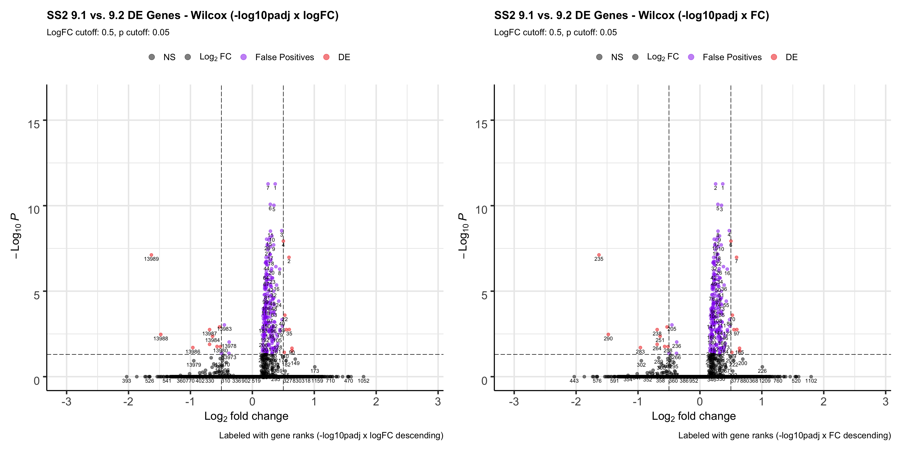

PDX Choices Documentation
Jesslyn Goh & Mike Cuoco
7/15/2020
Last updated: 2020-08-29
Checks: 7 0
Knit directory: jesslyn_ovca/analysis/
This reproducible R Markdown analysis was created with workflowr (version 1.6.2). The Checks tab describes the reproducibility checks that were applied when the results were created. The Past versions tab lists the development history.
Great! Since the R Markdown file has been committed to the Git repository, you know the exact version of the code that produced these results.
Great job! The global environment was empty. Objects defined in the global environment can affect the analysis in your R Markdown file in unknown ways. For reproduciblity it’s best to always run the code in an empty environment.
The command set.seed(20200713) was run prior to running the code in the R Markdown file. Setting a seed ensures that any results that rely on randomness, e.g. subsampling or permutations, are reproducible.
Great job! Recording the operating system, R version, and package versions is critical for reproducibility.
Nice! There were no cached chunks for this analysis, so you can be confident that you successfully produced the results during this run.
Great job! Using relative paths to the files within your workflowr project makes it easier to run your code on other machines.
Great! You are using Git for version control. Tracking code development and connecting the code version to the results is critical for reproducibility.
The results in this page were generated with repository version 5ffd81e. See the Past versions tab to see a history of the changes made to the R Markdown and HTML files.
Note that you need to be careful to ensure that all relevant files for the analysis have been committed to Git prior to generating the results (you can use wflow_publish or wflow_git_commit). workflowr only checks the R Markdown file, but you know if there are other scripts or data files that it depends on. Below is the status of the Git repository when the results were generated:
Ignored files:
Ignored: .DS_Store
Ignored: .Rhistory
Ignored: .Rproj.user/
Ignored: GO_results/.DS_Store
Ignored: GO_results/GO_PCA/.DS_Store
Ignored: GO_results/GO_Vln/.DS_Store
Ignored: GO_results/GO_Vln/PDX/.DS_Store
Ignored: GO_results/GO_plots/.DS_Store
Ignored: GO_results/GO_plots/PDX/.DS_Store
Ignored: GO_results/GO_plots/PDX/F/
Ignored: GO_results/GO_plots/SS2/.DS_Store
Ignored: GO_results/Tables/.DS_Store
Ignored: GO_results/Tables/PDX/.DS_Store
Ignored: GO_results/Tables/PDX/F/
Ignored: GO_results/Tables/SS2/.DS_Store
Ignored: analysis/.DS_Store
Ignored: code/.DS_Store
Ignored: data/.DS_Store
Ignored: data/HTAPP/
Ignored: data/Izar_2020/
Ignored: data/gene_lists/.DS_Store
Ignored: data/gene_lists/GO_PDX/.DS_Store
Ignored: data/gene_lists/GO_SS2/.DS_Store
Ignored: data/gene_lists/extra/.DS_Store
Ignored: jesslyn_plots/
Ignored: mike_plots/
Ignored: old/.DS_Store
Ignored: old/edited/.DS_Store
Ignored: renv/.DS_Store
Ignored: renv/library/
Ignored: renv/python/
Ignored: renv/staging/
Ignored: vignettes/
Note that any generated files, e.g. HTML, png, CSS, etc., are not included in this status report because it is ok for generated content to have uncommitted changes.
These are the previous versions of the repository in which changes were made to the R Markdown (analysis/PDX_choices.Rmd) and HTML (docs/PDX_choices.html) files. If you’ve configured a remote Git repository (see ?wflow_git_remote), click on the hyperlinks in the table below to view the files as they were in that past version.
| File | Version | Author | Date | Message |
|---|---|---|---|---|
| Rmd | 5ffd81e | jgoh2 | 2020-08-29 | PDX choices publish |
| Rmd | f1acd7b | jgoh2 | 2020-07-24 | Move PDX_choices.Rmd to old |
| Rmd | bc21d3a | jgoh2 | 2020-07-23 | PDX DE Analysis |
| Rmd | 979ae91 | jgoh2 | 2020-07-20 | Reorganize PDX code and add to the analysis folder |
OVERVIEW
Every choice we make along our RNA-seq analysis pipeline will affect the results we get and the conclusions we make about the data. Here, we document and explain the choices we make for each critical step in our PDX analysis:
- Normalization and Scaling
- What arguments should we use for ScaleData? -> do.scale = do.center = T
- Should we scale first or subset by model first? -> subset by model first
- Should we log normalize by model? -> No, log normalizing twice tightens the data too much
- Scoring Cells (AddModuleScore)
- Which Seurat slot does AddModuleScore use by default? –> normalized but unscaled “data” slot
- Should we call AddModuleScore first or subset by model first? -> Same results
- Which slot should we use for AddModuleScore? -> score with “data”, center afterward
- “data” slot
- “scale.data” slot
- score with “data” slot, the center the scores
- DE Analysis
- How do our decisions for FindMarkers (slot and statistical test) affect our results for:
- Identification of individual DE Genes (Volcano Plot)
- Geneset enrichment analysis (GSEA)
- What metric should we use to rank our genes? (logFC vs. AUC)
- How do our decisions for FindMarkers (slot and statistical test) affect our results for:
# Load packages
source(here::here('packages.R'))
#Read in PDX RDS object
PDX = readRDS("data/Izar_2020/Izar_2020_PDX.RDS")
PDX@meta.data <- PDX@meta.data[,-(9:58)]
treatment_levels <- c("vehicle", "MRD", "relapse")
PDX$treatment.status = factor(PDX$treatment.status, levels = treatment_levels)
# Read in gene lists
ccgenes = read_lines("data/gene_lists/regev_lab_cell_cycle_genes.txt")
s.genes <- ccgenes[1:43]
g2m.genes <- ccgenes[44:97]
#Read in hallmarks of interest
hallmark_names = read_lines("data/gene_lists/hallmarks.txt")
hallmark.list <- vector(mode = "list", length = length(hallmark_names))
names(hallmark.list) <- hallmark_names
for(hm in hallmark_names){
if(file.exists(glue("data/gene_lists/hallmarks/{hm}_updated.txt"))){
file <- read_lines(glue("data/gene_lists/hallmarks/{hm}_updated.txt"), skip = 1)
hallmark.list[[hm]] <- file
}
else{
file <- read_lines(glue("data/gene_lists/extra/{hm}.txt"), skip =2)
hallmark.list[[hm]] <- file
}
}
if(!dir.exists("jesslyn_plots/PDX_test")){dir.create("jesslyn_plots/PDX_test")}PART 1. NORMALIZATION AND SCALING
1.1 SCALING - DECIDING ScaleData( ) ARGUMENTS -> do.scale = do.center = T
- QUESTION: How does scaling/centering affect our data? We will be testing four scenarios:
- don’t run ScaleData
- ScaleData(do.scale = F, do.center = T)
- ScaleData(do.scale = T, do.center = F)
- ScaleData(do.scale = T, do.center = T)
IMPORTANCE: scaling makes count data more comparable across genes and cells, and how we scale our data affects downstream analysis such as dimensional reduction (PCA).
- HYPOTHESIS: we hypothesize that the do.scale = do.center = T scenario is best for our data, as it would make our data more comparable across genes and cells by centering the count distribution of each gene at zero, and controlling the standard deviation at 1.
- do.center: center the expression of each gene at 0 by subtracting the average expression for that gene
- do.scale: if do.center = TRUE, scales the expression level for each gene so that the sd is controlled at 1 (by dividing the centered gene expression levels by their standard deviations).
- APPROACH:
- Scale the normalized counts for each of the four scenarios listed above.
- Compute summary metrics for each scenario. Visualize the distribution of each summary metric with Violin Plots.
- Mean expression per cell
- Mean expression per gene
- Standard deviation per gene
#Scale PDX data in the four different ways
PDX_orig = ScaleData(PDX, do.scale = F, do.center = F)
PDX_center = ScaleData(PDX, do.scale = F, do.center = T)
PDX_scale = ScaleData(PDX, do.scale = T, do.center = F)
PDX_scale_center = ScaleData(PDX, do.scale = T, do.center = T)
#COMPARE EACH SCENARIO THROUGH VISUALIZATION
#compute and plot the mean expression per cell in each scenario
df = data.frame(
"orig" = colMeans(PDX_orig[["RNA"]]@scale.data),
"center" = colMeans(PDX_center[["RNA"]]@scale.data),
"scale" = colMeans(PDX_scale[["RNA"]]@scale.data),
"scale-center" = colMeans(PDX_scale_center[["RNA"]]@scale.data)
)
plot.df = reshape2::melt(df)
p1 = ggplot(plot.df, aes(x = variable, y = value, fill = variable)) +
geom_violin() +
labs(x = "PDX data norm type", y = "mean expression/cell", title = "expression/cell (Plot #1)") +
theme_bw()
#compute and plot the mean expression per gene in each scenario
df = data.frame(
"orig" = rowMeans(PDX_orig[["RNA"]]@scale.data),
"center" = rowMeans(PDX_center[["RNA"]]@scale.data),
"scale" = rowMeans(PDX_scale[["RNA"]]@scale.data),
"scale-center" = rowMeans(PDX_scale_center[["RNA"]]@scale.data)
)
plot.df = reshape2::melt(df)
p2 = ggplot(plot.df, aes(x = variable, y = value, fill = variable)) +
geom_violin() +
labs(x = "PDX data norm type", y = "mean expression/gene", title = "evaluate centering (Plot #2)") +
ylim(-5,10) +
theme_bw()
#compute and plot the standard deviation across cells per gene in each scenario
sd.df = data.frame(
"orig" = apply(PDX_orig[["RNA"]]@scale.data,1,sd),
"center" = apply(PDX_center[["RNA"]]@scale.data,1,sd),
"scale" = apply(PDX_scale[["RNA"]]@scale.data,1,sd),
"scale-center" = apply(PDX_scale_center[["RNA"]]@scale.data,1,sd)
)
plot.df = reshape2::melt(sd.df)
p3 = ggplot(plot.df, aes(x = variable, y = value, fill = variable)) +
geom_violin() +
labs(x = "PDX data norm type", y = "SD/gene", title = "evaluate scaling (Plot #3)") +
theme_bw()
p1+p2+p3 + patchwork::plot_layout(nrow = 1)%20arguments-1.png)
ggsave(filename = "PDX_data_scaletest.png", path = "jesslyn_plots/PDX_test", width = 15, height = 5)- CONCLUSIONS:
- Normalization
- Data has been log normalized considering the range of expression (0 - 1), and the shape of the distribution is reasonably normal.
- ScaleData() Arguments
- do.scale = do.center = TRUE is the best option because while center looks similar to scale.center for plots 1 and 2, the variance of center is not controlled.
- Normalization
1.2 SCALING - DECIDING TO SCALE FIRST OR SUBSET BY MODEL FIRST –> subset first
We previously decided the parameters for ScaleData (do.scale = do.center = T). Now, we’d like to see the effect of scaling before subsetting vs. scaling each model individually after subsetting by model, to decide which scenario is best.
QUESTION: Should we scale our data before subsetting by model, or should we subset by model first?
IMPORTANCE: We are interested in comparing gene expression between treatment conditions within each model. Considering that the difference between models are so drastic, using count data that is scaled so that it is comparable across genes across models might mask over the smaller differences between treatment conditions within a specific model. It is therefore a significant step to make sure that our count data in each model is scaled so that it is comparable across all cells within a specific model, instead of across models. We also want to center the average expression of each gene at 0.
HYPOTHESIS: We hypothesize that we should subset by model first, before scaling the data in each model separately, so that the data for each model would be scaled across all cells within the specific model itself.
- APPROACH: focus on DF20
- Scenario #1: Subset the PDX_scale_center Seurat object from above for DF20.
- Scenario #2: Subset the original PDX object for DF20. Scale the subsetted object (do.center = do.scale = T)
- Scenario #3: Subset the PDX_scale_center Seurat object for DF20, and scale the object again.
- Compute summary metrics for each scenario. Visualize the distribution of each summary metric with Violin Plots.
- Mean expression per cell
- Mean expression per gene
- Standard deviation per gene
#scenario 1: scale first then subset (PDX -> scale -> subset)
scale_center_DF20 <- subset(PDX_scale_center, subset = (model_ID == "DF20"))
#scenario 2: subset first, then scale (PDX -> subset -> scale)
DF20 <- subset(PDX, subset = model_ID == "DF20")
DF20_scale_center <- ScaleData(DF20, do.scale = T, do.center = T)
#scenario 3: scale first, subset, and scale again (PDX -> scale -> subset -> scale)
scale_center_DF20_scale_center <- ScaleData(scale_center_DF20, do.scale = T, do.center = T)
#COMPARE EACH SCENARIO THROUGH VISUALIZATION
#mean expression per cell within model DF20
cell.mean.df = data.frame(
"scale-center-DF20" = colMeans(scale_center_DF20[["RNA"]]@scale.data),
"DF20-scale-center" = colMeans(DF20_scale_center[["RNA"]]@scale.data),
"before-DF20-after" = colMeans(scale_center_DF20_scale_center[["RNA"]]@scale.data)
)
plot.df = reshape2::melt(cell.mean.df)
p1 = ggplot(plot.df, aes(x = variable, y = value, fill = variable)) +
geom_violin() +
labs(x = "PDX scale vs. subset sequence", y = "mean expression/cell", title = "expression/cell") +
theme_bw()
#mean expression per gene across all cells within model DF20
gene.mean.df = data.frame(
"scale-center-DF20" = rowMeans(scale_center_DF20[["RNA"]]@scale.data),
"DF20-scale-center" = rowMeans(DF20_scale_center[["RNA"]]@scale.data),
"before-DF20-after" = rowMeans(scale_center_DF20_scale_center[["RNA"]]@scale.data)
)
plot.df = reshape2::melt(gene.mean.df)
p2 = ggplot(plot.df, aes(x = variable, y = value, fill = variable)) +
geom_violin() +
labs(x = "PDX scale vs. subset sequence", y = "mean expression/gene", title = "evaluate the mean expression per gene") +
theme_bw()
#standard deviation per gene across all cells within model DF20
sd.df = data.frame(
"scale-center-DF20" = apply(scale_center_DF20[["RNA"]]@scale.data,1,sd),
"DF20-scale-center" = apply(DF20_scale_center[["RNA"]]@scale.data,1,sd),
"before-DF20-after" = apply(scale_center_DF20_scale_center[["RNA"]]@scale.data,1,sd)
)
plot.df = reshape2::melt(sd.df)
p3 = ggplot(plot.df, aes(x = variable, y = value, fill = variable)) +
geom_violin() +
labs(x = "PDX scale vs. subset sequence", y = "variance/gene", title = "evaluate the variance in expression per gene") +
theme_bw()
p1+p2+p3 + patchwork::plot_layout(nrow = 1)
ggsave(filename = "PDX_data_scaleVSsubset.png", path = "jesslyn_plots/PDX_test", width = 15, height = 5)- scale.center.DF20 = scale and center across all cells before subsetting by model
- DF20.scale.center = subset by model first before scaling and centering across all cells within an individual model
before.DF20.after = scale and center across all cells, subset by model, scale and center within each model again
- CONCLUSIONS:
- Graphs for the mean expression and variance per gene suggest that we should subset first, and scale each model separately. We could also scale everything first across all models, subset, and scale everything again within each model, since the distribution looks the same for all three criteria between the green and the blue scenarios. However, we decide to subset first because scaling twice might add bias.
- By scaling each model separately, we were able to control for the mean expression per gene (centered at 0), and were also able to control for the variance per gene (mostly sd of 1).
- Subsetting first and scaling afterwards therefore makes our data more comparable across cells within each model
- Graphs for the mean expression and variance per gene suggest that we should subset first, and scale each model separately. We could also scale everything first across all models, subset, and scale everything again within each model, since the distribution looks the same for all three criteria between the green and the blue scenarios. However, we decide to subset first because scaling twice might add bias.
PART 2. SCORING CELLS
2.1 AddModuleScore - INVESTIGATE WHICH SLOT IT CALLS FROM –> ‘data’ slot
QUESTION: Which data slot does AddModuleScore use?
IMPORTANCE: The type of data we use to score our cells will drastically affect downstream DE analysis.
HYPOTHESIS: we hypothesize that AddModuleScore uses the normalized but unscaled, uncentered “data” slot.
- APPROACH:
- Call AddModuleScore on the original normalized but unscaled, uncentered PDX Seurat object (PDX_orig) for OXPHOS
- Call AddModuleScore on the normalized, scaled, and centered PDX Seurat object (PDX_scale_center) for OXPHOS
- VlnPlot: Plot and compare the distribution of OXPHOS scores between the two Seurat objects.
#Calculate module score on the unscaled, uncentered PDX data, and plot the distribution of OXPHOS scores
PDX_orig <- AddModuleScore(PDX_orig, features = hallmark.list, name = names(hallmark.list), nbin = 25, search = T)
p1 <- VlnPlot(PDX_orig, features = "HALLMARK_OXIDATIVE_PHOSPHORYLATION25") + labs(title = "oxphos orig.score distribution", x = "PDX_orig")
#Calculate module score on scaled and centered PDX data, and plot the distribution of OXPHOS scores
PDX_scale_center <- AddModuleScore(PDX_scale_center, features = hallmark.list, name = names(hallmark.list), nbin = 25, search = T)
p2 <- VlnPlot(PDX_scale_center, features = "HALLMARK_OXIDATIVE_PHOSPHORYLATION25") + labs(title = "oxphos scale.center.score distribution", x = "PDX_scale_center")
p1 + p2 + plot_layout(guides= 'collect', nrow = 1, ncol = 2)
ggsave(filename = "PDX_data_addScoreTest.png", path = "jesslyn_plots/PDX_test", width = 10, height = 5)- CONCLUSIONS:
- Distribution of oxphos score is exactly the same between the unscaled and scaled PDX objects.
- Suggests that AddModuleScore() scores cells using the ‘data’ slot instead of the ‘scale.data’ slot
2.2 AddModuleScore - DECIDING TO SCORE CELLS FIRST OR SUBSET BY MODEL FIRST –> doesn’t matter
Our current workflow: PDX -> subset -> scale and center separately
- QUESTION: Should we call AddModuleScore before or after subsetting by model:
- PDX → AddModuleScore → subset → scale and center or
- PDX → subset → AddModuleScore separately → scale and center separately
IMPORTANCE: Since we are interested in detecting differential expression across treatment conditions within each model, it is important to investigate whether there are significant differences between scoring cells before vs. after subsetting by model, and to determine which workflow would be better.
- HYPOTHESIS: We hypothesize that we should call AddModuleScore after subsetting by model, since we are interested in comparing differential expression within each model.
- We hypothesize that by calling AddModuleScore() before subsetting by model, the score for an individual cell would be relative to all other cells across all models. This would possibly mask the difference between cells within models, since the difference across models is much larger. We therefore thought that calling AddModuleScore() individually by model should have resulted in a score for an individual cell that is relative to all other cells within the same model.
- APPROACH: focus on model DF20 and scoring for OXPHOS
- Scenario #1: Call AddModuleScore on the entire PDX dataset before subsetting for DF20
- Scenario #2: Subset for DF20, then call AddModuleScore on the subsetted object
- VlnPlot: Graph and compare the distribution of OXPHOS scores between the two scenario.
#Scenario 1: PDX -> scale -> add module score -> subset
score_DF20 <- subset(PDX_scale_center, subset = (model_ID == "DF20"))
p3 <- VlnPlot(score_DF20, features = "HALLMARK_OXIDATIVE_PHOSPHORYLATION25") + labs(title = "OXPHOS score first subset later (DF20)") + theme(plot.title = element_text(size = 8))
#Scenario 2: PDX -> subset -> scale -> add module score
DF20_score <- AddModuleScore(DF20_scale_center, features = hallmark.list, name = names(hallmark.list), nbin = 25, search = T)
p4 <- VlnPlot(DF20_score, features = "HALLMARK_OXIDATIVE_PHOSPHORYLATION25") + labs(title = "OXPHOS subset first score individually (DF20)") + theme(plot.title = element_text(size = 8))
#compare distribution of OXPHOS score between the two scenarios
p3 + p4 + plot_layout(guides= 'collect', nrow = 1, ncol = 2)
ggsave(filename = "PDX_data_scoreVSsubset.png", path = "jesslyn_plots/PDX_test", width = 10, height = 5)- CONCLUSIONS:
- The results rejected our hypothesis
- Calling AddModuleScore() before or after subsetting by model actually leads to the same distribution of oxphos gene scores
- This is possibly because AddModuleScore() is using the ‘data’ slot, which is the same whether we subset by model first or later. The expression of each gene within a cell is therefore still relative to all cells across models even after we subsetted for DF20. In addition, the distribution of OXPHOS scores are not centered at 0, which we’d like to have in order to understand the positive and negative relationship of the scores.
We wonder if it would be better to “force” AddModuleScore in using the “scale.data” slot (scaled and centered by model) instead, since the counts in the “scale.data” slot is relative to all cells within DF20, instead of across all models.
2.3 AddModuleScore - WHAT TYPE OF DATA IS BEST FOR SCORING CELLS –> data slot
- QUESTION: Which type of data is best for AddModuleScore?
- “data” slot
- “scale.data” slot
- Using “data” slot to score, center scores afterwards
IMPORTANCE: The type of data we use to score our cells may drastically affect downstream DE analysis.
HYPOTHESIS: We hypothesize that using the “scale.data” slot would be best, since it is scaled across all cells within a specific model.
- APPROACH:
- We compare the distribution of OXPHOS, UPR, and p53 scores in DF20 between the following three workflows to decide which slot is best for AddModuleScore:
- Using “data” slot
- Using “scale.data” slot
- Using “data” slot on DF20, center the scores afterwards
hms <- c("HALLMARK_OXIDATIVE_PHOSPHORYLATION25", "HALLMARK_UNFOLDED_PROTEIN_RESPONSE33", "HALLMARK_P53_PATHWAY26")
#Scenario 1: Using the "data" slot (basically scenario 2 from above, DF20_score object)
p1 <- VlnPlot(DF20_score, features = hms, combine= F, cols = c("#00AFBB"), pt.size = 0)
p1[[1]] <- p1[[1]] + labs(title = "OXPHOS ('data')", x = "DF20") +
geom_boxplot(width = 0.15, position = position_dodge(0.9), alpha = 0.3, show.legend = F)
p1[[2]] <- p1[[2]] + labs(title = "UPR ('data')", x = "DF20") +
geom_boxplot(width = 0.15, position = position_dodge(0.9), alpha = 0.3, show.legend = F)
p1[[3]] <- p1[[3]] + labs(title = "p53 ('data')", x = "DF20") +
geom_boxplot(width = 0.15, position = position_dodge(0.9), alpha = 0.3, show.legend = F)
#Scenario 2: Using the "scale.data" slot
scale.data <- GetAssayData(object = DF20_scale_center, slot = "scale.data")
DF20_scale_center_forced <- SetAssayData(object = DF20_scale_center, slot = "data", new.data = scale.data, assay = "RNA")
DF20_scale.dataSlot <- AddModuleScore(DF20_scale_center_forced, features = hallmark.list, name = names(hallmark.list), nbin = 25, search = T)
p2 <- VlnPlot(DF20_scale.dataSlot, pt.size = 0, features = hms, combine = F, cols= c("#E7B800"))
p2[[1]] <- p2[[1]] + labs(title = "OXPHOS ('scale.data')", x = "DF20") +
geom_boxplot(width = 0.15, position = position_dodge(0.9), alpha = 0.3, show.legend = F)
p2[[2]]<- p2[[2]] + labs(title = "UPR ('scale.data')", x = "DF20") +
geom_boxplot(width = 0.15, position = position_dodge(0.9), alpha = 0.3, show.legend = F)
p2[[3]] <- p2[[3]] + labs(title = "p53 ('scale.data')", x = "DF20") +
geom_boxplot(width = 0.15, position = position_dodge(0.9), alpha = 0.3, show.legend = F)
#Scenario 3: Using the "data" slot, center the scores afterward, reassign to metadata
hm.names <- names(DF20_score@meta.data)[9:55]
hms.centered <- c("HALLMARK_OXIDATIVE_PHOSPHORYLATION25.centered", "HALLMARK_UNFOLDED_PROTEIN_RESPONSE33.centered", "HALLMARK_P53_PATHWAY26.centered")
for(i in hm.names){
hm.centered <- scale(DF20_score[[i]], scale = FALSE)
DF20_score <- AddMetaData(DF20_score, hm.centered, col.name = glue("{i}.centered"))
}
p3 <- VlnPlot(DF20_score, features = hms.centered, pt.size = 0, combine = F, cols = c("#FC4E07"))
p3[[1]] <- p3[[1]] + labs(title = "OXPHOS ('data' score centered)", x = "DF20") +
geom_boxplot(width = 0.15, position = position_dodge(0.9), alpha = 0.3, show.legend = F)
p3[[2]] <- p3[[2]] + labs(title = "UPR ('data' score centered)", x = "DF20") +
geom_boxplot(width = 0.15, position = position_dodge(0.9), alpha = 0.3, show.legend = F)
p3[[3]] <- p3[[3]] + labs(title = "p53 ('data' score centered)", x = "DF20") +
geom_boxplot(width = 0.15, position = position_dodge(0.9), alpha = 0.3, show.legend = F)
#COMPARE
p1[[1]] + p3[[1]] + p2[[1]] + plot_layout(guides= 'collect', nrow = 1, ncol = 3)
ggsave(filename = "DF20_AddModuleScore_oxphos.png", path = "jesslyn_plots/PDX_test", width = 10, height = 5)
p1[[2]] + p3[[2]] + p2[[2]] + plot_layout(guides= 'collect', nrow = 1, ncol = 3)
ggsave(filename = "DF20_AddModuleScore_UPR.png", path = "jesslyn_plots/PDX_test", width = 10, height = 5)
p1[[3]] + p3[[3]] + p2[[3]] + plot_layout(guides= 'collect', nrow = 1, ncol = 3)
ggsave(filename = "DF20_AddModuleScore_p53.png", path = "jesslyn_plots/PDX_test", width = 10, height = 5)- CONCLUSIONS:
- By using the scale.data slot, the distributions of module scores are now centered at 0, and the shape of the distribution (variance) also shifted. This change in shape is possibly because the scores are now calculated relative to all other cells within the same model, rather than across all models. Since the scale.data slot scales the expression of each gene within DF20 to a sd of 1,it explains why graphs for the scale.data scenario look tighter.
- Centering the scores calculated from normalized but unscaled, uncentered “data” simply shifted the whole violin plot to a mean of 0, but conserved the shape of the distribution (same variance).
- By looking at these plots, we’re still not very sure which scenario is best for AddModuleScore, since AddModuleScore forces us to use the “data” slot, “scale.data” might not be the right slot to use. However, at the same time, by using the “data” slot, the expression per gene across cells is still not scaled to be relative across all cells within DF20, but is relative across all models instead. Both scenarios may have led to bias in our results.
- By using the scale.data slot, the distributions of module scores are now centered at 0, and the shape of the distribution (variance) also shifted. This change in shape is possibly because the scores are now calculated relative to all other cells within the same model, rather than across all models. Since the scale.data slot scales the expression of each gene within DF20 to a sd of 1,it explains why graphs for the scale.data scenario look tighter.
To look into this more, we compare the variance in module score between the scenarios.
#compute standard deviation per module
DF20_data.df <- DF20_score@meta.data %>% as.data.frame()
DF20_scale.data.df <- DF20_scale.dataSlot@meta.data %>% as.data.frame()
sd.df = data.frame(
"DF20_data" = apply(DF20_data.df[9:55], 2, sd),
"DF20_data.centered" = apply(DF20_data.df[56:102], 2, sd),
"DF20_scale.data" = apply(DF20_scale.data.df[9:55],2,sd)
)
plot.df = reshape2::melt(sd.df)
ggplot(plot.df, aes(x = variable, y = value, fill = variable)) + geom_violin() +
labs(x = "DF20 AddModuleScore senario", y = "variance/module", title = "Comparing DF20 variance in module score") +
theme_bw() +
scale_fill_manual(values = c("#00AFBB", "#E7B800", "#FC4E07"))
ggsave(filename = "DF20_AddModuleScore_variance.png", path = "jesslyn_plots/PDX_test", width = 10, height = 5)- It seems like the variance is a lot tighter when we use the scale.data slot. This is expected because the standard deviation of each gene is controlled at 1 for the scale.data slot.
- However, we wonder if using the scale.data slot would diminish intra-model differences instead of enhancing them.
To further investigate this issue, we now split the violin plot (still focusing solely on DF20) by treatment status to examine if the trends we see are similar between using the data vs. scale.data slot. * We hypothesize that we should see clear trends where the MRD treatment condition differentially overexpress OXPHOS, UPR, and p53 genes, especially when using the scale.data slot.
#Scenario 1: Using the "data" slot
p1 <- VlnPlot(DF20_score, features = hms, combine= F, group.by = "treatment.status", cols = c("#00AFBB", "#E7B800", "#FC4E07"), pt.size = 0)
p1[[1]] <- p1[[1]] + labs(title = "OXPHOS ('data')", x = "DF20") +
geom_boxplot(width = 0.15, position = position_dodge(0.9), alpha = 0.3, show.legend = F)
p1[[2]] <- p1[[2]] + labs(title = "UPR ('data')", x = "DF20") +
geom_boxplot(width = 0.15, position = position_dodge(0.9), alpha = 0.3, show.legend = F)
p1[[3]] <- p1[[3]] + labs(title = "p53 ('data')", x = "DF20") +
geom_boxplot(width = 0.15, position = position_dodge(0.9), alpha = 0.3, show.legend = F)
#Scenario 2: Using the "scale.data" slot
p2 <- VlnPlot(DF20_scale.dataSlot, features = hms, combine = F, group.by = "treatment.status", cols = c("#00AFBB", "#E7B800", "#FC4E07"), pt.size = 0)
p2[[1]] <- p2[[1]] + labs(title = "OXPHOS ('scale.data')", x = "DF20") +
geom_boxplot(width = 0.15, position = position_dodge(0.9), alpha = 0.3, show.legend = F)
p2[[2]]<- p2[[2]] + labs(title = "UPR ('scale.data')", x = "DF20") +
geom_boxplot(width = 0.15, position = position_dodge(0.9), alpha = 0.3, show.legend = F)
p2[[3]] <- p2[[3]] + labs(title = "p53 ('scale.data')", x = "DF20") +
geom_boxplot(width = 0.15, position = position_dodge(0.9), alpha = 0.3, show.legend = F)
#Scenario 3: Using the "data" slot, center the scores afterward, reassign to metadata
p3 <- VlnPlot(DF20_score, features = hms.centered, combine = F, group.by = "treatment.status", cols = c("#00AFBB", "#E7B800", "#FC4E07"), pt.size = 0)
p3[[1]] <- p3[[1]] + labs(title = "OXPHOS ('data' score centered)", x = "DF20") +
geom_boxplot(width = 0.15, position = position_dodge(0.9), alpha = 0.3, show.legend = F)
p3[[2]] <- p3[[2]] + labs(title = "UPR ('data' score centered)", x = "DF20") +
geom_boxplot(width = 0.15, position = position_dodge(0.9), alpha = 0.3, show.legend = F)
p3[[3]] <- p3[[3]] + labs(title = "p53 ('data' score centered)", x = "DF20") +
geom_boxplot(width = 0.15, position = position_dodge(0.9), alpha = 0.3, show.legend = F)
#COMPARE
p1[[1]] + p3[[1]] + p2[[1]] + plot_layout(guides= 'collect', nrow = 1, ncol = 3)
ggsave(filename = "DF20_AddModuleScore_oxphosByT.png", path = "jesslyn_plots/PDX_test", width = 10, height = 5)
p1[[2]] + p3[[2]] + p2[[2]] + plot_layout(guides= 'collect', nrow = 1, ncol = 3)
ggsave(filename = "DF20_AddModuleScore_UPRByT.png", path = "jesslyn_plots/PDX_test", width = 10, height = 5)
p1[[3]] + p3[[3]] + p2[[3]] + plot_layout(guides= 'collect', nrow = 1, ncol = 3)
ggsave(filename = "DF20_AddModuleScore_p53ByT.png", path = "jesslyn_plots/PDX_test", width = 10, height = 5)Although similar trends are seen between the three scenarios, there are also some inconsistencies between them. For example: * It seems like the trends are more obvious when calculating module score with the scale.data slot. - This is what we hoped/ expected because the scale.data slot scales the counts across cells within the same model, rather than across all models (which would have masked intra-model differences due to the large inter-model differences) * For the UPR plot, it seems like MRD has the highest expression level when using the “data” slot, but not when using the “scale.data” slot. This is weird because scaling the data shouldn’t affect the relative position of the count data. For example, if a cell in treatment condition A expresses a higher level of gene A than condition B, scaling the data and controlling for the standard deviation should still make condition A express higher levels of gene A than condition B. * The results from this graph therefore tells us that there are significant differences depending on the slot we use for AddModuleScore considering how they resulted in different trends.
- CONCLUSIONS
- Looking at these results, we decide that the scale.data slot might have shrunk the variance too much, which may obscure some differences. We therefore determine that it is best to use the data slot instead.
- Counts in the normalized but unscaled “data” slot is comparable across cells because of TPM/RPKM/FPKM.
- Looking at these results, we decide that the scale.data slot might have shrunk the variance too much, which may obscure some differences. We therefore determine that it is best to use the data slot instead.
PART 3. DE ANALYSIS
3.1 INVESTIGATE WHICH SLOT IS BEST FOR FINDMARKERS –> “data” slot
QUESTION: Which data slot is best for FindMarkers?
IMPORTANCE: Possible that we will get different DE genes, LogFC, and pvalues, depending on the data slot we use. This may drastically affect our visualization of DE genes (Volcano Plots) and downstream DE Analysis such as GSEA, which both rely on the FindMarkers function.
HYPOTHESIS: We hypothesize that it would be better to use the “data” slot because the “scale.data” slot are already z-scores.
- APPROACH: Focus on DE genes between MRD and vehicle in DF20 (default test = “wilcox”)
- Call FindMarkers on DF20 using the “data” slot
- Call FindMarkers on DF20 using the “scale.data” slot
- Arrange the DE gene list from step #1 and #2 in ascending order for padj (genes w/ the smallest padj value on top) and then in descending order for avg_logFC / avg_diff depending on the data slot used (genes w/ the highest logFC on top)
data_slot <- FindMarkers_code(DF20_score, group.by = "treatment.status", group.1 = "MRD", group.2 = "vehicle")
scale.data.slot <- FindMarkers_code(DF20_score, group.by = "treatment.status", group.1 = "MRD", group.2 = "vehicle", slot = "scale.data")
both <- merge(data_slot, scale.data.slot, by="rowname")
both <- both %>% mutate("both.DE" = as.character(both$data.DE + both$scale.data.DE))
identical(data_slot$rowname, scale.data.slot$rowname)[1] FALSElength(which(data_slot$rowname != scale.data.slot$rowname))/13893[1] 0.9512704#compare ranks
ranks.plot <- ggplot(both, aes(x = data.rank, y = scale.data.rank)) + geom_point(alpha = 0.5, aes(colour = both.DE)) + geom_abline() + labs(title = "Comparing gene ranks when using data vs. scale.data", x = "data", y = "scale.data", colour = "DE in", subtitle = "ranked by padj ascending, then logFC descending", caption = "R = 0.67, p < 2.2e-16") + theme_bw() +
theme(plot.title = element_text(size = 10), plot.subtitle = element_text(size = 8))
ggsave(plot = ranks.plot, "DF20_FindMarkers_slot_ranks.png", path = "jesslyn_plots/PDX_test")
#compare padj
padj.plot <- ggplot(both, aes(x = p_val_adj.x, y = p_val_adj.y)) + geom_point(alpha = 0.5) + geom_abline() + theme_bw() + labs(title = "Comparing the padj values of using data vs. scale.data", x = "data", y = "scale.data", caption = "R = 1, p < 2.2e-16") + theme(plot.title = element_text(size = 10))
ggsave(plot = padj.plot, "DF20_FindMarkers_slot_padj.png", path = "jesslyn_plots/PDX_test")
#compare avg_logfc vs. avg_diff
logFC.plot <- ggplot(both, aes(x = avg_logFC, y = avg_diff)) + geom_point(alpha = 0.3, aes(colour = both.DE)) + labs(title = "Comparing the logFC and avg_diff values of using data vs. scale.data", x = "data", y = "scale.data", colour = "DE in", caption = "R = 0.56, p < 2.2e-16") + theme_bw() + theme(plot.title = element_text(size = 10)) + geom_abline()
ggsave(plot = logFC.plot, "DF20_FindMarkers_slot_logFC.png", path = "jesslyn_plots/PDX_test")
ranks.plot + padj.plot + logFC.plot + plot_layout(guides= 'collect')
- CONCLUSIONS
- Ranks between the two scenarios are the same in the beginning but begin to diverge significantly starting from the 680th gene all the way to the end of the ranked lists. Only 95% of the rankings are the same.
- Only genes in the beginning of the ranked list are detected as DE in both scenarios.
- Not what we expected, because DE genes should be detected both at the beginning (significantly upregulated) and the end (significantly downregulated) of the ranked list
We examine how padj and logFC (or avg_diff) values correlate between the two scenarios: * padj values associated with each gene is identical regardless of the slot used (correlation coefficient = 1) - Makes sense because the wilcoxon rank sum test is used here, so the unscaled vs. scaled count data should be given the same rank in each scenario to calculate the p values. * The ranks therefore differ depending on the slot used for FindMarkers due to avg_logFC (or avg_diff) - Unexpected because although the scale.data slot are z-scores, the scaling shouldn’t have changed the relative expression across cells for a single gene. For example, if a condition expresses more a gene A than the other condition, while they expresses gene B at the same level, scaling the counts should not change the fact that gene A is differentially expressed while gene B is not. The avg_logFC of gene A relative to gene B should therefore be identical to the avg_diff of gene A relative to gene B. - Although it could be possible that FindMarkers may have scaled the counts in the scale.data slot again, which may have tightened the spread of the data even more and obscure differences between conditions, the fact that FindMarkers report values in avg_diff instead of avg_logFC imply that the function should already know that it is working with z-scores when slot is set to scale.data. - We therefore investigate how the distribution of avg_logFC when using the “data” slot compares to the distribution of avg_diff when using the “scale.data” slot for FindMarkers.
fc.diff = data.frame(
"avg_logFC" = data_slot$avg_logFC,
"avg_diff" = scale.data.slot$avg_diff
)
plot.df = reshape2::melt(fc.diff)
ggplot(plot.df, aes(x = variable, y = value, fill = variable)) + geom_violin() +
labs(x = "'data' vs. 'scale.data'", y = "logFC or diff", title = "Comparing the distribution of avg_logFC vs. avg_diff") +
theme_bw()
ggsave("DF20_FindMarkers_slot_logFC2.png", path = "jesslyn_plots/PDX_test")- OBSERVATIONS
- Both are normally distributed and centered at 0. Makes sense because most genes are not differentially expressed.
- The distribution of avg_diff is a lot tighter than that of avg_logFC. There are a lot more genes that are deemed not DE when using scale.data than data.
- This makes sense because the count data for each gene in scale.data is scaled to a sd of 1, which explains why less variation is detected when we use scale.data
- Not sure if using the scale.data slot actually reduces false positives, since less DE genes are detected, or increases false negatives (obscures differences between cells).
- However, this does not explain how the gene ranks would change when we use “data” vs. “scale.data”.
- Here, we plot the average count of each gene within DF20, only MRD, and only vehicle, using both “data” and “scale.data” to visualize how the ranks might have changed.
DF20.vehicle <- subset(DF20_score, subset = (treatment.status == "vehicle"))
DF20.MRD <- subset(DF20_score, subset = (treatment.status == "MRD"))
df.data <- data.frame(
"DF20" = Matrix::rowMeans(DF20_score[["RNA"]]@data),
"DF20.vehicle" = Matrix::rowMeans(DF20.vehicle[["RNA"]]@data),
"DF20.MRD" = Matrix::rowMeans(DF20.MRD[["RNA"]]@data),
"diff" = (Matrix::rowMeans(DF20.MRD[["RNA"]]@data) - Matrix::rowMeans(DF20.vehicle[["RNA"]]@data)),
"logFC" = log2(Matrix::rowMeans(DF20.MRD[["RNA"]]@data) / Matrix::rowMeans(DF20.vehicle[["RNA"]]@data)),
"genes" = rownames(DF20.vehicle) %in% c("DDRGK1","RPS27","BCL9L","PYCR1","ACSF2"),
"rownames" = rownames(DF20.vehicle)
)
rownames(df.data) <- rownames(DF20.vehicle)
df.scale.data <- data.frame(
"DF20.vehicle" = rowMeans(DF20.vehicle[["RNA"]]@scale.data),
"DF20.MRD" = rowMeans(DF20.MRD[["RNA"]]@scale.data),
"diff" = rowMeans(DF20.MRD[["RNA"]]@scale.data) - rowMeans(DF20.vehicle[["RNA"]]@scale.data),
"genes" = rownames(DF20.vehicle) %in% c("DDRGK1","RPS27","BCL9L","PYCR1","ACSF2"),
"rownames" = rownames(DF20.vehicle)
)
rownames(df.scale.data) <- rownames(DF20.vehicle)
scale.data = data.frame("DF20" = rowMeans(DF20_score[["RNA"]]@scale.data),
"genes" = rownames(DF20_score) %in% c("DDRGK1","RPS27","BCL9L","PYCR1","ACSF2"),
"rownames" = rownames(DF20.vehicle)
)
plot.df.data = reshape2::melt(df.data)
plot.df.scale.data = reshape2::melt(df.scale.data)
plot = reshape2::melt(scale.data)
p1 = ggplot() +
geom_point(data = plot.df.data, aes(x = variable, y = value, colour = genes), alpha = 0.3) + labs(title = "data slot") +
theme_bw() + geom_text_repel(data = filter(plot.df.data, genes == TRUE), aes(x = variable, y = value, label = rownames), size = 2)
p2 = ggplot() +
geom_point(data = plot.df.scale.data, aes(x = variable, y = value, colour = genes), alpha = 0.3) + labs(title = "scale.data slot") +
theme_bw() + geom_text_repel(data = filter(plot.df.scale.data, genes == TRUE), aes(x = variable, y = value, label = rownames), size = 2)
p3 = ggplot() +
geom_point(data = plot, aes(x = variable, y = value, colour = genes), alpha = 0.3) + labs(title = "scale.data slot DF20 only") +
theme_bw() + geom_text_repel(data = filter(plot, genes == TRUE), aes(x = variable, y = value, label = rownames), size = 2)
p1 + p3 + p2 + plot_layout(guides= 'collect')
abs(df.data["DDRGK1","logFC"]) > abs(df.data["ACSF2","logFC"]) &&
abs(df.data["ACSF2","logFC"]) > abs(df.data["RPS27","logFC"]) &&
abs(df.data["RPS27","logFC"]) > abs(df.data["BCL9L","logFC"]) &&
abs(df.data["BCL9L","logFC"]) > abs(df.data["PYCR1","logFC"])[1] TRUEabs(df.scale.data["RPS27","diff"]) > abs(df.scale.data["DDRGK1","diff"]) &&
abs(df.scale.data["DDRGK1","diff"]) > abs(df.scale.data["ACSF2","diff"]) &&
abs(df.scale.data["ACSF2","diff"]) > abs(df.scale.data["BCL9L","diff"]) &&
abs(df.scale.data["BCL9L","diff"]) > abs(df.scale.data["PYCR1","diff"])[1] TRUE- OBSERVATIONS
- Interestingly, the position of average gene expression are drastically different depending on whether we use the “data” or “scale.data” slot. This also affects the ranking of differential expression:
- data slot ranking: DDRGK1 > ACSF2 > RPS27 > BCL9L > PYCR1
- scale.data slot ranking: RPS27 > DDRGK1 > ACSF2 > BCL9L > PYCR1
- Interestingly, the position of average gene expression are drastically different depending on whether we use the “data” or “scale.data” slot. This also affects the ranking of differential expression:
We therefore build MAPlots to try to determine whether avg_logFC or avg_diff would be a better metric to use.
MA.df = data.frame(
"rowname" = rownames(DF20_score[["RNA"]]@data),
"normalized.exp" = Matrix::rowMeans(DF20_score[["RNA"]]@data)
)
MA.df <- merge(MA.df, both, by = "rowname")
FC <- ggplot(MA.df, aes(x = normalized.exp, y = avg_logFC)) +
geom_point() +
theme_bw() +
geom_hline(yintercept =0, colour = "grey") +
labs(x = "Log2 Mean Expression", y = "logFC", title = "Mean expression (from data slot) vs. logFC")
diff <- ggplot(MA.df, aes(x = normalized.exp, y = avg_diff)) +
geom_point() +
theme_bw() +
geom_hline(yintercept = 0, colour = "grey") +
labs(x = "Log2 Mean Expression", title = "Mean expression (from data slot) vs. avg_diff")
FC + diff
- CONCLUSIONS
- Based on the comparison, it seems like avg_logFC is a better metric to use than avg_diff because the variation in logFC follows what we would expect from an MAplot, which decreases as the log2 mean expression increases, while the variance in avg_diff is large nonetheless.
3.1.2 INVESTIGATE WHICH STATISTICAL TEST IS BEST FOR FINDMARKERS
- QUESTION: Which statistical test is best for FindMarkers?
- wilcoxon rank sum test
- t test
- MAST
- LR
IMPORTANCE: Different statistical tests use different approximations and assumptions, which may slightly affect the resulting DE genes they detect.
HYPOTHESIS: We hypothesize that the wilcox rank sum test would be the best test to use.
- APPROACH: Focus on DE genes between MRD and vehicle in DF20
- Call FindMarkers on DF20 with the four statistical tests (“data” slot)
- Arrange the DE gene list from step #1 in ascending order for padj (genes w/ the smallest padj value on top) and then in descending order for avg_logFC (genes w/ the highest logFC on top)
- Compare
wilcox <- FindMarkers_code(DF20_score, group.by = "treatment.status", group.1 = "MRD", group.2 = "vehicle", stattest = "wilcox")
colnames(wilcox) <- c("feature", "wilcox.logFC", "wilcox.padj", "wilcox.-log10padj", "wilcox.rank", "wilcox.DE")
t.test <- FindMarkers_code(DF20_score, group.by = "treatment.status", group.1 = "MRD", group.2 = "vehicle", stattest = "t")
colnames(t.test) <- c("feature", "t.logFC", "t.padj", "t.-log10padj", "t.rank", "t.DE")
MAST <- FindMarkers_code(DF20_score, group.by = "treatment.status", group.1 = "MRD", group.2 = "vehicle", stattest = "MAST")
colnames(MAST) <- c("feature", "MAST.logFC", "MAST.padj", "MAST.-log10padj", "MAST.rank", "MAST.DE")
LR <- FindMarkers_code(DF20_score, group.by = "treatment.status", group.1 = "MRD", group.2 = "vehicle", stattest = "LR")
colnames(LR) <- c("feature", "LR.logFC", "LR.padj", "LR.-log10padj", "LR.rank", "LR.DE")
wilcox.t <- merge(wilcox, t.test, by = "feature")
MAST.LR <- merge(MAST, LR, by = "feature")
all <- merge(wilcox.t, MAST.LR, by = "feature")
#compare padj
all.padj <- ggpairs(all, columns = c("wilcox.padj", "t.padj", "MAST.padj", "LR.padj"), diag = "blank", mapping = aes(alpha = 0.3)) + labs(title = "Comparing padj values between statistical tests")
all.padj[2,1] <- all.padj[2,1] + geom_abline(colour = "grey")
all.padj[3,1] <- all.padj[3,1] + geom_abline(colour = "grey")
all.padj[3,2] <- all.padj[3,2] + geom_abline(colour = "grey")
all.padj[4,1] <- all.padj[4,1] + geom_abline(colour = "grey")
all.padj[4,2] <- all.padj[4,2] + geom_abline(colour = "grey")
all.padj[4,3] <- all.padj[4,3] + geom_abline(colour = "grey")
all.padj
ggsave(plot = all.padj, "DF20_FindMarkers_test_padj.png", path = "jesslyn_plots/PDX_test", height = 7.15, width = 7.15)
#compare -log10 padj
all.neglog10padj <- ggpairs(all, columns = c("wilcox.-log10padj", "t.-log10padj", "MAST.-log10padj", "LR.-log10padj"), diag = "blank", mapping = aes(alpha = 0.3)) + labs(title = "Comparing -log10 padj values between statistical tests")
all.neglog10padj[2,1] <- all.neglog10padj[2,1] + geom_abline(colour = "grey")
all.neglog10padj[3,1] <- all.neglog10padj[3,1] + geom_abline(colour = "grey")
all.neglog10padj[3,2] <- all.neglog10padj[3,2] + geom_abline(colour = "grey")
all.neglog10padj[4,1] <- all.neglog10padj[4,1] + geom_abline(colour = "grey")
all.neglog10padj[4,2] <- all.neglog10padj[4,2] + geom_abline(colour = "grey")
all.neglog10padj[4,3] <- all.neglog10padj[4,3] + geom_abline(colour = "grey")
all.neglog10padj
ggsave(plot = all.neglog10padj, "DF20_FindMarkers_test_-log10padj.png", path = "jesslyn_plots/PDX_test", height = 7.15, width = 7.15)
#compare logFC
all.logFC <- ggpairs(all, columns = c("wilcox.logFC", "t.logFC", "MAST.logFC", "LR.logFC"), diag = "blank", mapping = aes(alpha = 0.3)) + labs(title = "Comparing logFC values between statistical tests")
all.logFC[2,1] <- all.logFC[2,1] + geom_abline(colour = "grey")
all.logFC[3,1] <- all.logFC[3,1] + geom_abline(colour = "grey")
all.logFC[3,2] <- all.logFC[3,2] + geom_abline(colour = "grey")
all.logFC[4,1] <- all.logFC[4,1] + geom_abline(colour = "grey")
all.logFC[4,2] <- all.logFC[4,2] + geom_abline(colour = "grey")
all.logFC[4,3] <- all.logFC[4,3] + geom_abline(colour = "grey")
all.logFC
ggsave(plot = all.logFC, "DF20_FindMarkers_test_logFC.png", path = "jesslyn_plots/PDX_test", height = 7.15, width = 7.15)
#compare ranks
all.ranks <- ggpairs(all, columns = c("wilcox.rank", "t.rank", "MAST.rank", "LR.rank"), diag = "blank", mapping = aes(alpha = 0.3)) + labs(title = "Comparing gene ranks between statistical tests", subtitle = "Ranked by padj ascending, then logFC descending")
all.ranks[2,1] <- all.ranks[2,1] + geom_abline(colour = "grey")
all.ranks[3,1] <- all.ranks[3,1] + geom_abline(colour = "grey")
all.ranks[3,2] <- all.ranks[3,2] + geom_abline(colour = "grey")
all.ranks[4,1] <- all.ranks[4,1] + geom_abline(colour = "grey")
all.ranks[4,2] <- all.ranks[4,2] + geom_abline(colour = "grey")
all.ranks[4,3] <- all.ranks[4,3] + geom_abline(colour = "grey")
all.ranks
ggsave(plot = all.ranks, "DF20_FindMarkers_test_ranks.png", path = "jesslyn_plots/PDX_test", height = 7.15, width = 7.15)- CONCLUSIONS:
- The logFC value associated with each gene is identical regardless of the statistical test used (correlation coefficient = 1).
- However, padj values differ significantly between statistical tests. The best correlation is between LR and the t.test, which has a correlation coefficient of 0.957. Although the correlation coefficient is stronger when plotting -log10padj values, they still differ significantly between statistical tests
- Despite the significant differences in padj values between statistical tests, gene ranks between statistical test are strongly correlated, the strongest being the correlation between LR and the t.test (0.987).
- Although the t.test and LR are the only two tests that were highly correlated with each other for all three metrics, we are not sure if this means that either of the two tests are best for our data.
Since the logFC values are identical across statistical tests, gene rank depends on the padj value associated with each statistical test. We examine this by creating an MAplot and coloring each gene by whether it is DE in none, one, or any combination of statistical tests.
#compute whether a gene is DE in none, one, or any combination of statistical tests
all <- all %>% mutate("num.DE" = as.character(all$wilcox.DE + all$t.DE + all$MAST.DE + all$LR.DE))
#MAplots
MA.df = data.frame(
"feature" = rownames(DF20_score[["RNA"]]@data),
"normalized.exp" = Matrix::rowMeans(DF20_score[["RNA"]]@data)
)
MA.df <- merge(MA.df, all, by = "feature")
stat.FC <- ggplot(MA.df, aes(x = normalized.exp, y = wilcox.logFC)) +
geom_point(alpha = 0.5, aes(colour = num.DE)) +
theme_bw() +
geom_hline(yintercept =0, colour = "grey") +
labs(x = "Log2 Mean Expression", y = "logFC", title = "Mean expression vs. logFC (Label DE genes from all statistical tests)", colour = "DE in:")
wilcox.FC <- ggplot(MA.df, aes(x = normalized.exp, y = wilcox.logFC)) +
geom_point(alpha = 0.5, aes(colour = wilcox.DE)) +
theme_bw() +
geom_hline(yintercept =0, colour = "grey") +
labs(x = "Log2 Mean Expression", y = "logFC", title = "Mean expression vs. logFC (Label DE genes from wilcox)", colour = "DE")
t.FC <- ggplot(MA.df, aes(x = normalized.exp, y = t.logFC)) +
geom_point(alpha = 0.5, aes(colour = t.DE)) +
theme_bw() +
geom_hline(yintercept =0, colour = "grey") +
labs(x = "Log2 Mean Expression", y = "logFC", title = "Mean expression vs. logFC (Label DE genes from t.test)", colour = "DE")
MAST.FC <- ggplot(MA.df, aes(x = normalized.exp, y = MAST.logFC)) +
geom_point(alpha = 0.5, aes(colour = MAST.DE)) +
theme_bw() +
geom_hline(yintercept =0, colour = "grey") +
labs(x = "Log2 Mean Expression", y = "logFC", title = "Mean expression vs. logFC (Label DE genes from MAST)", colour = "DE")
LR.FC <- ggplot(MA.df, aes(x = normalized.exp, y = LR.logFC)) +
geom_point(alpha = 0.5, aes(colour = LR.DE)) +
theme_bw() +
geom_hline(yintercept =0, colour = "grey") +
labs(x = "Log2 Mean Expression", y = "logFC", title = "Mean expression vs. logFC (Label DE genes from LR)", colour = "DE")
stat.FC
wilcox.FC + t.FC + MAST.FC + LR.FC + plot_layout(guides= 'collect')
- OBSERVATIONS
- It seems like all of the statistical tests share similar DE genes, although there are a variety of genes that are DE in only a few of the tests.
- However, this plot is not informative enough about which statistical test is the best. We therefore plot volcano plots for each statistical test and determine which test gives us the most false positives (genes with very small padj but also small logFC).
wilcox.volcano <- EnhancedVolcano(all, lab = all$feature, x='wilcox.logFC', y='wilcox.padj', pCutoff = 0.05, FCcutoff = 0.5, col = c("black", "black", "purple2", "red2"),
title= "DF20 MRD vs. vehicle DE Genes - Wilcox", subtitle= "LogFC cutoff: 0.5, p cutoff: 0.05",
legendLabels = c("NS", expression(Log[2]~FC), "False Positives", "DE"), caption = paste(sum(all$wilcox.DE), "DE genes"))
t.volcano <- EnhancedVolcano(all, lab = all$feature, x='t.logFC', y='t.padj',
pCutoff = 0.05, FCcutoff = 0.5, col = c("black", "black", "purple2", "red2"),
title= "DF20 MRD vs. vehicle DE Genes -T.test", subtitle= "LogFC cutoff: 0.5, p cutoff: 0.05",
legendLabels = c("NS", expression(Log[2]~FC), "False Positives", "DE"), caption = paste(sum(all$t.DE), "DE genes"))
MAST.volcano <- EnhancedVolcano(all, lab = all$feature, x='MAST.logFC', y='MAST.padj', pCutoff = 0.05, FCcutoff = 0.5, col = c("black", "black", "purple2", "red2"),
title= "DF20 MRD vs. vehicle DE Genes - MAST", subtitle= "LogFC cutoff: 0.5, p cutoff: 0.05",
legendLabels = c("NS", expression(Log[2]~FC), "False Positives", "DE"), caption = paste(sum(all$MAST.DE), "DE genes"))
LR.volcano <- EnhancedVolcano(all, lab = all$feature, x='LR.logFC', y='LR.padj',
pCutoff = 0.05, FCcutoff = 0.5, col = c("black", "black", "purple2", "red2"),
title= "DF20 MRD vs. vehicle DE Genes - LR", subtitle= "LogFC cutoff: 0.5, p cutoff: 0.05",
legendLabels = c("NS", expression(Log[2]~FC), "False Positives", "DE"), caption = paste(sum(all$LR.DE), "DE genes"))
all.volcano <- wilcox.volcano + t.volcano + MAST.volcano + LR.volcano
all.volcano
ggsave(plot = all.volcano, filename = "DF20_stattest_volcano.png", path = "jesslyn_plots/PDX_test", height = 15, width = 20)We investigate how ranking by padj for each statistical test would affect our results. Which statistical test gives us the most false positives at the top of the rank?
wilcox.volcano <- EnhancedVolcano(all, lab= all$wilcox.rank, selectLab = all$wilcox.rank, x='wilcox.logFC', y='wilcox.padj', pCutoff = 0.05, FCcutoff = 0.5, col = c("black", "black", "purple2", "red2"),
title= "DF20 MRD vs. vehicle DE Genes - Wilcox (ranked with padj)", subtitle= "LogFC cutoff: 0.5, p cutoff: 0.05",
caption = "Labeled with gene ranks (padj ascending, logFC descending)",
legendLabels = c("NS", expression(Log[2]~FC), "False Positives", "DE"))
t.volcano <- EnhancedVolcano(all, lab= all$t.rank, selectLab = all$t.rank, x='t.logFC', y='t.padj',
pCutoff = 0.05, FCcutoff = 0.5, col = c("black", "black", "purple2", "red2"),
title= "DF20 MRD vs. vehicle DE Genes -T.test (ranked with padj)", subtitle= "LogFC cutoff: 0.5, p cutoff: 0.05",
caption = "Labeled with gene ranks (padj ascending, logFC descending)",
legendLabels = c("NS", expression(Log[2]~FC), "False Positives", "DE"))
MAST.volcano <- EnhancedVolcano(all, lab= all$MAST.rank, selectLab = all$MAST.rank, x='MAST.logFC', y='MAST.padj', pCutoff = 0.05, FCcutoff = 0.5, col = c("black", "black", "purple2", "red2"),
title= "DF20 MRD vs. vehicle DE Genes - MAST (ranked with padj)", subtitle= "LogFC cutoff: 0.5, p cutoff: 0.05",
caption = "Labeled with gene ranks (padj ascending, logFC descending)",
legendLabels = c("NS", expression(Log[2]~FC), "False Positives", "DE"))
LR.volcano <- EnhancedVolcano(all, lab= all$LR.rank, selectLab = all$LR.rank, x='LR.logFC', y='LR.padj',
pCutoff = 0.05, FCcutoff = 0.5, col = c("black", "black", "purple2", "red2"),
title= "DF20 MRD vs. vehicle DE Genes - LR (ranked with padj)", subtitle= "LogFC cutoff: 0.5, p cutoff: 0.05",
caption = "Labeled with gene ranks (padj ascending, logFC descending)",
legendLabels = c("NS", expression(Log[2]~FC), "False Positives", "DE"))
all.volcano <- wilcox.volcano + t.volcano + MAST.volcano + LR.volcano
all.volcano
ggsave(plot = all.volcano, filename = "DF20_stattest_volcano2.png", path = "jesslyn_plots/PDX_test", height = 15, width = 20)- CONCLUSIONS
- T-test and LR resulted in the least number of false positives (small padj values but also small logFC).
- Since we rank the genes by padj values first, then by logFC, a lot of the genes that are at the top of the rank for wilcox and MAST are actually false positives.
- However, T.test and LR detected drastically less DE genes than wilcox and MAST. We’re not sure whether using the t.test or LR would be better because they reduce false positives, since less DE genes are detected, or if it is actually not a great idea to use these two tests because they possibly increase false negatives (obscures differences between cells).
Since t.test and LR are parametric tests, unlike wilcox, which is nonparametric, we examine whether it would still be better to use the data slot than the scale.data slot for parametric tests like we have determined above. * We focus on using the t.test as the representative of parametric tests
#t.test
t.data = t.test
t.scale.data <- FindMarkers_code(DF20_score, group.by="treatment.status", group.1 = "MRD", group.2 = "vehicle", stattest = "t", slot = "scale.data")
colnames(t.scale.data) <- c("feature", "t.avg_diff", "t.scale.padj", "t.scale.-log10padj", "t.scale.rank", "t.scale.DE")
t.both <- merge(t.data, t.scale.data, by = "feature")
t.both <- t.both %>% mutate("DE.in" = as.character(t.both$t.DE + t.both$t.scale.DE))
#compare ranks
t.ranks.plot <- ggplot(t.both, aes(x = t.rank, y = t.scale.rank)) + geom_point(alpha = 0.5, aes(colour = DE.in)) + geom_abline() + labs(title = "Comparing gene ranks when using data vs. scale.data for t.test", x = "data", y = "scale.data", subtitle = "ranked by padj ascending, then logFC descending", caption = "R = 0.62, p < 2.2e-16", colour = "DE in") + theme_bw() +
theme(plot.title = element_text(size = 10), plot.subtitle = element_text(size = 8))
ggsave(plot = t.ranks.plot, "DF20_FindMarkers_slot_t.ranks.png", path = "jesslyn_plots/PDX_test")
#compare padj
t.padj.plot <- ggplot(t.both, aes(x = t.padj, y = t.scale.padj)) + geom_point(alpha = 0.5) + theme_bw() + geom_abline() + labs(title = "Comparing the padj values of using data vs. scale.data for t.test", x = "data", y = "scale.data", caption = "R = 1, p < 2.2e-16") + theme(plot.title = element_text(size = 10))
ggsave(plot = t.padj.plot, "DF20_FindMarkers_slot_t.padj.png", path = "jesslyn_plots/PDX_test")
#compare avg_logfc vs. avg_diff
t.logFC.plot <- ggplot(t.both, aes(x = t.logFC, y = t.avg_diff)) + geom_point(alpha = 0.3, aes(colour = DE.in)) + labs(title = "Comparing the logFC and avg_diff values of using data vs. scale.data for t.test", x = "data", y = "scale.data", colour = "DE in", caption = "R = 0.56, p < 2.2e-16") + theme_bw() + theme(plot.title = element_text(size = 10)) + geom_abline()
ggsave(plot = t.logFC.plot, "DF20_FindMarkers_slot_t.logFC.png", path = "jesslyn_plots/PDX_test")
t.ranks.plot + t.padj.plot + t.logFC.plot + plot_layout(guides= 'collect')
#MAplots
MA.df = data.frame(
"feature" = rownames(DF20_score[["RNA"]]@data),
"normalized.exp" = Matrix::rowMeans(DF20_score[["RNA"]]@data)
)
MA.df <- merge(MA.df, t.both, by = "feature")
FC <- ggplot(MA.df, aes(x = normalized.exp, y = t.logFC)) +
geom_point(alpha = 0.5, aes(colour = DE.in)) +
theme_bw() +
geom_hline(yintercept =0, colour = "grey") +
labs(x = "Log2 Mean Expression", y = "logFC", title = "Mean expression (from data slot) vs. logFC - T.test")
diff <- ggplot(MA.df, aes(x = normalized.exp, y = t.avg_diff)) +
geom_point(alpha = 0.5, aes(colour = DE.in)) +
theme_bw() +
geom_hline(yintercept = 0, colour = "grey") +
labs(x = "Log2 Mean Expression", title = "Mean expression (from data slot) vs. avg_diff - T.test")
FC + diff
- CONCLUSIONS
- Very similar results when testing which data slot is best for parametric tests in comparison to what we determine while using the nonparamteric wilcoxon rank sum test:
- We obtained the same padj values regardless of the slot we used for the t.test
- Ranks differed at a similar level it differed when testing with the wilcoxon statistical test
- MAplot tells us that it would be better to use the “data” slot, because the distribution of t.logFC has less variation than the distribution of t.avg_diff.
- Very similar results when testing which data slot is best for parametric tests in comparison to what we determine while using the nonparamteric wilcoxon rank sum test:
3.1.3 INVESTIGATE RANKING METHOD
- We demonstrated above that ranking by padj values first, then by logFC resulted in false positives, where many genes that are high in rank have low padj values but also low logFC that do not meet the 0.5 threshold. Here, we investigate which method would be best for ranking genes:
- Ranking by padj values ascending, then by logFC descending (demonstrated above, will include again below)
- Ranking by logFC descending, then by padj values ascending
- Rank by AUC
- Ranking by first filtering out genes with padj > 0.05, then rank by logFC descending
- Multiplying -log10padj by logFC and using this metric to rank genes
- Multiplying -log10padj by FC and using this metric to rank genes
all.volcano
- Rank by padj first, then by logFC:
- A lot of false positives - many genes that are at the top of the rank, especially for wilcox and MAST are actually false positives.
We now test how our ranked list would look like if we rank with logFC first:
#rank by logFC descending first, then by padj
wilcox.FCrank <- FindMarkers_code(DF20_score, group.by = "treatment.status", group.1 = "MRD", group.2 = "vehicle", stattest = "wilcox", rank.by = "logFC")
colnames(wilcox.FCrank) <- c("rowname", "wilcox.logFC", "wilcox.padj", "wilcox.-log10padj", "wilcox.rank", "wilcox.DE")
t.test.FCrank <- FindMarkers_code(DF20_score, group.by = "treatment.status", group.1 = "MRD", group.2 = "vehicle", stattest = "t", rank.by = "logFC")
colnames(t.test.FCrank) <- c("rowname", "t.logFC", "t.padj", "t.-log10padj", "t.rank", "t.DE")
MAST.FCrank <- FindMarkers_code(DF20_score, group.by = "treatment.status", group.1 = "MRD", group.2 = "vehicle", stattest = "MAST", rank.by = "logFC")
colnames(MAST.FCrank) <- c("rowname", "MAST.logFC", "MAST.padj", "MAST.-log10padj", "MAST.rank", "MAST.DE")
LR.FCrank <- FindMarkers_code(DF20_score, group.by = "treatment.status", group.1 = "MRD", group.2 = "vehicle", stattest = "LR", rank.by = "logFC")
colnames(LR.FCrank) <- c("rowname", "LR.logFC", "LR.padj", "LR.-log10padj", "LR.rank", "LR.DE")
#volcano plots
wilcox.FCrank.plot <- EnhancedVolcano(wilcox.FCrank, lab= wilcox.FCrank$wilcox.rank, selectLab = wilcox.FCrank$wilcox.rank, x='wilcox.logFC', y='wilcox.padj', pCutoff = 0.05, FCcutoff = 0.5, col = c("black", "black", "purple2", "red2"),
title= "DF20 MRD vs. vehicle DE Genes - Wilcox (ranked with logFC)", subtitle= "LogFC cutoff: 0.5, p cutoff: 0.05",
caption = "Labeled with gene ranks (logFC descending, padj ascending)",
legendLabels = c("NS", expression(Log[2]~FC), "False Positives", "DE"))
t.FCrank.plot <- EnhancedVolcano(t.test.FCrank, lab= t.test.FCrank$t.rank, selectLab = t.test.FCrank$t.rank, x='t.logFC', y='t.padj', pCutoff = 0.05, FCcutoff = 0.5, col = c("black", "black", "purple2", "red2"),
title= "DF20 MRD vs. vehicle DE Genes - T.test (ranked with logFC)", subtitle= "LogFC cutoff: 0.5, p cutoff: 0.05",
caption = "Labeled with gene ranks (logFC descending, padj ascending)",
legendLabels = c("NS", expression(Log[2]~FC), "False Positives", "DE"))
MAST.FCrank.plot <- EnhancedVolcano(MAST.FCrank, lab= MAST.FCrank$MAST.rank, selectLab = MAST.FCrank$MAST.rank, x='MAST.logFC', y='MAST.padj', pCutoff = 0.05, FCcutoff = 0.5, col = c("black", "black", "purple2", "red2"),
title= "DF20 MRD vs. vehicle DE Genes - MAST (ranked with logFC)", subtitle= "LogFC cutoff: 0.5, p cutoff: 0.05",
caption = "Labeled with gene ranks (logFC descending, padj ascending)",
legendLabels = c("NS", expression(Log[2]~FC), "False Positives", "DE"))
LR.FCrank.plot <- EnhancedVolcano(LR.FCrank, lab= LR.FCrank$LR.rank, selectLab = LR.FCrank$LR.rank, x='LR.logFC', y='LR.padj', pCutoff = 0.05, FCcutoff = 0.5, col = c("black", "black", "purple2", "red2"),
title= "DF20 MRD vs. vehicle DE Genes - LR (ranked with logFC)", subtitle= "LogFC cutoff: 0.5, p cutoff: 0.05",
caption = "Labeled with gene ranks (logFC descending, padj ascending)",
legendLabels = c("NS", expression(Log[2]~FC), "False Positives", "DE"))
all.FCrank.plot <- wilcox.FCrank.plot + t.FCrank.plot + MAST.FCrank.plot + LR.FCrank.plot
all.FCrank.plot
ggsave(plot = all.FCrank.plot, file = "DF20_FCrankPlot.png", path = "jesslyn_plots/PDX_test", width = 20, height = 15)- Rank by logFC first, then by padj:
- Very bad - genes at the top of the ranked list all have a padj value of 1. They aggregate at the bottom of the volcano plot.
- Genes that are actually detected as DE (padj < 0.05, abs(logFC) > 0.5) are towards the very end of the ranked list.
- The only good news is that the false positives are also at the very end of the ranked list instead of being at the top of the list like when we ranked with padj.
TESTING WILCOXAUC* We now test how our ranked list would look like if we rank with AUC. AUC is calculated using the wilcoxauc function, which calculate the logFC, padj, and auc value for each gene
wilcoxauc.test <- wilcoxauc(DF20_score, group_by = "treatment.status", groups_use = c("vehicle", "MRD"), assay = "data") %>% filter(group == "MRD")
wilcoxauc.test <- wilcoxauc.test %>%
arrange(-auc) %>%
mutate("rank" = seq(from=1, to=length(wilcoxauc.test$feature)))
#compare metrics from wilcoxauc.test vs. wilcox
wilcoxVs.auc <- merge(wilcox, wilcoxauc.test, by = "feature")
wilcoxVsAuc.padj <- ggplot(wilcoxVs.auc, aes(x = wilcox.padj, y = padj)) +
geom_point(alpha = 0.5) + geom_abline() + theme_bw() +
labs(x = "wilcox padj", y = "wilcoxauc padj", title = "Comparing padj values from wilcox vs. wilcoxauc", subtitle = "R = 0.22, p < 2.2e-16")
wilcoxVsAuc.logFC <- ggplot(wilcoxVs.auc, aes(x = wilcox.logFC, y = logFC)) +
geom_point(alpha = 0.5) + geom_abline() + theme_bw() +
labs(x = "wilcox logFC", y = "wilcoxauc logFC", title = "Comparing logFC values from wilcox vs. wilcoxauc", subtitle = "R = 0.56, p < 2.2e-16")
wilcoxVsAuc.rank <- ggplot(wilcoxVs.auc, aes(x = wilcox.rank, y = rank)) +
geom_point(alpha = 0.5) + geom_abline() + theme_bw() +
labs(x = "wilcox rank (by padj first)", y = "wilcoxauc rank (by auc)", title = "Comparing gene ranks between ranking by padj vs. auc", subtitle = "R = 0.29, p < 2.2e-16")
wilcoxVsAuc.padj + wilcoxVsAuc.logFC + wilcoxVsAuc.rank
- We used wilcoxauc to calculate the logFC, padj, and auc value for each gene in MRD relative to vehicle. However, the logFC and padj values obtained differs significantly from those we obtained using the wilcoxon rank sum test.
- While some genes have a padj value of 1 using the wilcox test, they actually have a significant padj value (p < 0.05) when using the wilcoxauc
- It is unexpected that the logFC value associated with each gene would be different depending on the statistical test, because that was not the case when we tested between the four statistical tests above (wilcox, t.test, MAST, LR).
We are not sure which test to trust considering how drastically different the logFC and padj values obtained are between the two statistical tests.
Meanwhile, we rank each gene by their auc value, and a create VolcanoPlot to visualize the results:
wilcoxauc.plot <- EnhancedVolcano(wilcoxauc.test, lab= wilcoxauc.test$rank, selectLab = wilcoxauc.test$rank, x='logFC', y='padj', pCutoff = 0.05, FCcutoff = 0.5, col = c("black", "black", "purple2", "red2"),
title= "DF20 MRD vs. vehicle DE Genes - WilcoxAUC (ranked by AUC)", subtitle= "LogFC cutoff: 0.5, p cutoff: 0.05",
caption = "Labeled by gene ranks (ranked by AUC)",
legendLabels = c("NS", expression(Log[2]~FC), "False Positives", "DE")) + theme(plot.title = element_text(size = 12), plot.subtitle = element_text(size = 8), plot.caption = element_text(size = 10))
wilcox.volcano <- wilcox.volcano + theme(plot.title = element_text(size = 12), plot.subtitle = element_text(size = 8), plot.caption = element_text(size = 10))
wilcox.FCrank.plot <- wilcox.FCrank.plot + theme(plot.title = element_text(size = 12), plot.subtitle = element_text(size = 8), plot.caption = element_text(size = 10))
ranks.plot <- wilcoxauc.plot + wilcox.volcano + wilcox.FCrank.plot
ranks.plot
- OBSERVATIONS
- The wilcoxauc test gave us a lot more false positives than any of the statistical tests we tested above, and some of these false positives are pretty high up in the gene ranks, although most of them are in the middle / lower end of the rank.
- Ranking genes with auc seems like the best option because genes that are at the top of the list (auc = 1) are those that are enriched in group.1 (MRD) relative group.2 (vehicle), while genes that are at the end of the list (auc = 0) are those that are depleted in group.1 (MRD) relative to group.2 (vehicle). Genes in the middle are those that are not DE.
- This is the most appropriate way of ranking genes for GSEA. GSEA ranks genes by walking down the list and adding to a running sum if a gene in the list is in the geneset. Therefore, if the GSEA plot is skewed towards the left, it means that the geneset is enriched, while if the plot is skewed towards the right, the geneset is depleted altogether.
- Although this can also be achieved by ranking genes by logFC, we demonstrated above that doing so will result in top ranked genes with a padj value of 1.
- However, if we ranked by padj values first, top ranked genes would be a mixture of those that are upregulated and depleted.
- Although ranking genes by AUC seems like the best method for now, the drastic difference in logFC and padj values we get from the wilcoxauc vs. wilcox statistical tests is a concerning factor, and we’re not sure which metric to trust.
- We therefore try to rank by logFC again, but filter out not statistically significant genes first. We will investigate how the rankings look on the volcano plot again. As above, we will focus on wilcox.
TESTING FILTER OUT PADJ FIRST, THEN RANK BY LOGFC
wilcox.fpFC <- wilcox %>% select(-wilcox.rank) %>% filter(wilcox.padj < 0.05)
wilcox.fpFC <- wilcox.fpFC %>% arrange(-wilcox.logFC)
wilcox.fpFC <- wilcox.fpFC %>% mutate("wilcox.rank" = seq(from = 1, length = nrow(wilcox.fpFC)))
wilcox.fpFC.plot <- EnhancedVolcano(wilcox.fpFC, lab= wilcox.fpFC$wilcox.rank, selectLab = wilcox.fpFC$wilcox.rank, x='wilcox.logFC', y='wilcox.padj', pCutoff = 0.05, FCcutoff = 0.5, col = c("black", "black", "purple2", "red2"),
title= "DF20 MRD vs. vehicle DE Genes - Wilcox (filtered out p>0.05 genes, ranked by logFC)", subtitle= "LogFC cutoff: 0.5, p cutoff: 0.05",
caption = "Labeled with gene ranks (logFC descending)",
legendLabels = c("NS", expression(Log[2]~FC), "False Positives", "DE")) + theme(plot.title = element_text(size = 12), plot.subtitle = element_text(size = 8), plot.caption = element_text(size = 10))
p <- wilcox.volcano + wilcox.FCrank.plot + wilcoxauc.plot + wilcox.fpFC.plot
pggsave(plot = p, filename = "ranktest.png", path = "jesslyn_plots/PDX_test", width = 15, height = 15)It seems like filtering our padj first, then ranking by logFC might be the best option because: - The most enriched genes are all at the top - The most depleted genes are all at the bottom - They are all statistically significant - False positives are at the middle of the ranked list which doesn’t matter * However, it might not be a great idea to filter out genes because GSEA needs to work on all genes. * We therefore test to rank genes by - multiplying -log10padj by logFC and using this metric to rank - filtering out padj> 0.05 genes first then rank by that metric
TESTING -LOG10PADJ X LOGFC METRIC
# -log10padj * logFC ----------------------
wilcox.Mult <- wilcox %>% select(-wilcox.rank)
wilcox.Mult <- wilcox.Mult %>%
mutate("rank.metric" = wilcox.Mult$"wilcox.-log10padj" * wilcox.Mult$wilcox.logFC)
wilcox.Mult <- wilcox.Mult %>% arrange(-rank.metric)
wilcox.Mult <- wilcox.Mult %>% mutate("wilcox.rank" = seq(from = 1, length = nrow(wilcox.Mult)))
wilcox.Mult.plot <- EnhancedVolcano(wilcox.Mult, lab= wilcox.Mult$wilcox.rank, selectLab = wilcox.Mult$wilcox.rank, x='wilcox.logFC', y='wilcox.padj', pCutoff = 0.05, FCcutoff = 0.5, col = c("black", "black", "purple2", "red2"),
title= "DF20 MRD vs. vehicle DE Genes - Wilcox (-log10padj * logFC)", subtitle= "LogFC cutoff: 0.5, p cutoff: 0.05",
caption = "Labeled with gene ranks (-log10padj * logFC descending)",
legendLabels = c("NS", expression(Log[2]~FC), "False Positives", "DE")) + theme(plot.title = element_text(size = 12), plot.subtitle = element_text(size = 8), plot.caption = element_text(size = 10))
# -log10padj * logFC (filter genes out)
wilcox.Mult.filt <- wilcox %>% select(-wilcox.rank) %>% filter(wilcox.padj < 0.05)
wilcox.Mult.filt <- wilcox.Mult.filt %>%
mutate("rank.metric" = wilcox.Mult.filt$"wilcox.-log10padj" * wilcox.Mult.filt$wilcox.logFC)
wilcox.Mult.filt <- wilcox.Mult.filt %>% arrange(-rank.metric)
wilcox.Mult.filt <- wilcox.Mult.filt %>% mutate("wilcox.rank" = seq(from = 1, length = nrow(wilcox.Mult.filt)))
wilcox.Mult.filt.plot <- EnhancedVolcano(wilcox.Mult.filt, lab= wilcox.Mult.filt$wilcox.rank, selectLab = wilcox.Mult.filt$wilcox.rank, x='wilcox.logFC', y='wilcox.padj', pCutoff = 0.05, FCcutoff = 0.5, col = c("black", "black", "purple2", "red2"),
title= "DF20 MRD vs. vehicle DE Genes - Wilcox (filtered, -log10padj * logFC)", subtitle= "LogFC cutoff: 0.5, p cutoff: 0.05",
caption = "Labeled with gene ranks (filtered, -log10padj * logFC descending)",
legendLabels = c("NS", expression(Log[2]~FC), "False Positives", "DE")) + theme(plot.title = element_text(size = 12), plot.subtitle = element_text(size = 8), plot.caption = element_text(size = 10))
p1 <- p + wilcox.Mult.plot + wilcox.Mult.filt.plot
p1 ggsave(plot = p1, filename = "ranktest2.png", path = "jesslyn_plots/PDX_test", width = 30, height = 15)- In terms of comparing ranking methods using the wilcox test, it seems like ranking it by the -log10padj x logFC metric is the best because it has a nice separation of upregulated and downregulated genes at separate poles, and genes that are false positives are relatively in the middle of the rank.
- Although we are not considering so much about ranking after filtering genes out, it is important to note that ranking genes with logFC after filtering genes out allows us to rank genes that are highly DE on top, whereas using the -log10padj x logFC puts the priority more to statistical significance (genes that are more statistically significant are at the top of the list despite the clearly separate poles).
- We are still unsure how to compare wilcoxauc vs wilcox, since the AUC metric is also great for ranking but the logFC and padj values we get are completely different.
We now try the following to try to give more weight to FC than padj by Multiplying -log10padj by FC and using this metric to rank genes
TESTING -LOG10PADJ X FC METRIC
# -log10padj x FC
wilcox.MultxFC <- wilcox %>% select(-wilcox.rank)
wilcox.MultxFC <- wilcox.MultxFC %>% mutate("wilcox.FC" = exp(wilcox.logFC))
wilcox.MultxFC <- wilcox.MultxFC %>% mutate("rank.metric" = wilcox.MultxFC$"wilcox.-log10padj" * wilcox.FC)
wilcox.MultxFC <- wilcox.MultxFC %>%
arrange(-rank.metric) %>% mutate("wilcox.rank" = seq(from =1, length = nrow(wilcox.MultxFC)))
wilcox.MultxFC.plot <- EnhancedVolcano(wilcox.MultxFC, lab= wilcox.MultxFC$wilcox.rank, selectLab = wilcox.MultxFC$wilcox.rank, x='wilcox.logFC', y='wilcox.padj', pCutoff = 0.05, FCcutoff = 0.5, col = c("black", "black", "purple2", "red2"),
title= "DF20 MRD vs. vehicle DE Genes - Wilcox (-log10padj * FC)", subtitle= "LogFC cutoff: 0.5, p cutoff: 0.05",
caption = "Labeled with gene ranks (-log10padj * FC descending)",
legendLabels = c("NS", expression(Log[2]~FC), "False Positives", "DE")) + theme(plot.title = element_text(size = 12), plot.subtitle = element_text(size = 8), plot.caption = element_text(size = 10))
p2 <- p + wilcox.Mult.plot + wilcox.MultxFC.plot
p2ggsave(plot = p2, filename = "ranktest3.png", path = "jesslyn_plots/PDX_test", width = 30, height = 15)
p3 <- wilcox.Mult.plot + wilcox.MultxFC.plot
ggsave(plot = p3, filename = "ranktest4.png", path = "jesslyn_plots/PDX_test", width = 30, height = 15)- It seems like using the -log10adj * logFC metric is still the best because differentially downregulated genes are more towards the end of the list, and less false positive genes are nearer to the top of the list.
- However, we try to confirm our decisions by running GSEA using both ranking methods.
TESTING GSEA
We try to run GSEA with the following ranking methods:
- -log10padj * logFC
- -log10padj * FC
# DF20 MRD vs. Vehicle OXPHOS ------------------------------
# -log10padj x logFC
wilcox.Mult.ranks <- wilcox.Mult %>% select(feature, rank.metric) %>% deframe()
wilcox.Mult.GSEA <- fgsea(hallmark.list, stats = wilcox.Mult.ranks, minSize = 15, maxSize = 500, nperm = 1000) %>%
as_tibble() %>%
select(-leadingEdge, -ES, -nMoreExtreme) %>%
arrange(desc(NES), padj)
padj = wilcox.Mult.GSEA %>% filter(pathway == "UNUPDATED.OXPHOS") %>% select(padj) %>% deframe() %>% round(digits = 3)
NES = wilcox.Mult.GSEA %>% filter(pathway == "UNUPDATED.OXPHOS") %>% select(NES) %>% deframe() %>% round(digits = 3)
p5 <- plotEnrichment(pathway = hallmark.list[["UNUPDATED.OXPHOS"]], stats = wilcox.Mult.ranks) + labs(title = glue("DF20 OXPHOS GSEA results for MRD vs. Vehicle"), subtitle = glue("(NES = {NES}, padj = {padj})"), caption = "-log10padj x logFC")
# -log10padj x FC
wilcox.MultxFC.ranks <- wilcox.MultxFC %>% select(feature, rank.metric) %>% deframe()
wilcox.MultxFC.GSEA <- fgsea(hallmark.list, stats = wilcox.MultxFC.ranks, minSize = 15, maxSize = 500, nperm = 1000) %>%
as_tibble() %>%
select(-leadingEdge, -ES, -nMoreExtreme) %>%
arrange(desc(NES), padj)
padj = wilcox.MultxFC.GSEA %>% filter(pathway == "UNUPDATED.OXPHOS") %>% select(padj) %>% deframe() %>% round(digits = 3)
NES = wilcox.MultxFC.GSEA %>% filter(pathway == "UNUPDATED.OXPHOS") %>% select(NES) %>% deframe() %>% round(digits = 3)
p6 <- plotEnrichment(pathway = hallmark.list[["UNUPDATED.OXPHOS"]], stats = wilcox.MultxFC.ranks) + labs(title = glue("DF20 OXPHOS GSEA results for MRD vs. Vehicle"), subtitle = glue("(NES = {NES}, padj = {padj})"), caption = "-log10padj x FC")
p3 <- p5 + p6
ggsave(plot = p3, filename = "GSEAtest.png", path = "jesslyn_plots/PDX_test", width = 15)- It is interesting that using different ranking methods give us such different results.
- Multiplying by logFC tells us that MRD deplete OXPHOS genes, while multiplying by FC tells us that MRD enriches OXPHOS genes.
- Although both enrichment scores are insignificant, the FC padj is closer to 1
- However, our VlnPlot of DF20 OXPHOS scores show us that MRD upregulates OXPHOS genes relative to Vehicle (although it is insignificant), so we are not sure whether we should go with ranking by multiplying FC or logFC.
We try to run GSEA using both ranking methods on other comparisons (SS2 9.1 vs. 9.2 OXPHOS)
- According to our Violin plot, 9.1 > 9.2 for OXPHOS expression (and this difference is statistically significant)
#SS2 9.1 vs. 9.2 OXPHOS -----------------
SS2Malignant.9 <- readRDS(file = "data/Izar_2020/jesslyn_SS2Malignant9_processed.RDS")
SS2.1v2.markers <- FindMarkers(SS2Malignant.9, group.by = "sample", ident.1 = "9.1", ident.2 = "9.2", test.use = "wilcox", logfc.threshold = 0)
SS2.1v2.markers <- SS2.1v2.markers %>% rownames_to_column() %>% mutate("neglog10padj"= -log10(p_val_adj))
#-log10padj x logFC -----------------------
SS2.Mult.logFC <- SS2.1v2.markers %>% mutate("rank.metric" = (neglog10padj * avg_logFC))
SS2.Mult.logFC <- SS2.Mult.logFC %>% arrange(-rank.metric) %>% mutate("rank" = seq(from = 1, length = nrow(SS2.Mult.logFC))) %>% mutate("DE" = (abs(avg_logFC) > 0.5 & p_val_adj < 0.05))
SS2.Mult.logFC.plot <- EnhancedVolcano(SS2.Mult.logFC, lab= SS2.Mult.logFC$rank, selectLab = SS2.Mult.logFC$rank, x='avg_logFC', y='p_val_adj', pCutoff = 0.05, FCcutoff = 0.5, col = c("black", "black", "purple2", "red2"),
title= "SS2 9.1 vs. 9.2 DE Genes - Wilcox (-log10padj x logFC)", subtitle= "LogFC cutoff: 0.5, p cutoff: 0.05",
caption = "Labeled with gene ranks (-log10padj x logFC descending)",
legendLabels = c("NS", expression(Log[2]~FC), "False Positives", "DE"))
#GSEA
SS2.Mult.logFC.ranks <- SS2.Mult.logFC %>% select(rowname, rank.metric) %>% deframe()
SS2.Mult.logFC.GSEA <- fgsea(hallmark.list, stats = SS2.Mult.logFC.ranks, minSize = 15, maxSize = 500, nperm = 1000) %>%
as_tibble() %>%
select(-leadingEdge, -ES, -nMoreExtreme) %>%
arrange(desc(NES), padj)
padj = SS2.Mult.logFC.GSEA %>% filter(pathway == "GO.OXPHOS") %>% select(padj) %>% deframe() %>% round(digits = 3)
NES = SS2.Mult.logFC.GSEA %>% filter(pathway == "GO.OXPHOS") %>% select(NES) %>% deframe() %>% round(digits = 3)
p7 <- plotEnrichment(pathway = hallmark.list[["GO.OXPHOS"]], stats = SS2.Mult.logFC.ranks) + labs(title = glue("SS2 OXPHOS GSEA results for 9.1 vs. 9.2"), subtitle = glue("(NES = {NES}, padj = {padj})"), caption = "-log10padj x logFC")
#-log10padj x FC -----------------------
SS2.MultxFC <- SS2.1v2.markers %>% mutate("FC" = exp(avg_logFC))
SS2.MultxFC <- SS2.MultxFC %>% mutate("rank.metric" = neglog10padj * FC)
SS2.MultxFC <- SS2.MultxFC %>%
arrange(-rank.metric) %>%
mutate("rank" = seq(from =1, length = nrow(SS2.MultxFC)))
SS2.Mult.FC.plot <- EnhancedVolcano(SS2.MultxFC, lab= SS2.MultxFC$rank, selectLab = SS2.MultxFC$rank, x='avg_logFC', y='p_val_adj', pCutoff = 0.05, FCcutoff = 0.5, col = c("black", "black", "purple2", "red2"),
title= "SS2 9.1 vs. 9.2 DE Genes - Wilcox (-log10padj x FC)", subtitle= "LogFC cutoff: 0.5, p cutoff: 0.05",
caption = "Labeled with gene ranks (-log10padj x FC descending)",
legendLabels = c("NS", expression(Log[2]~FC), "False Positives", "DE"))
#GSEA
SS2.Mult.FC.ranks <- SS2.MultxFC %>% select(rowname, rank.metric) %>% deframe()
SS2.Mult.FC.GSEA <- fgsea(hallmark.list, stats = SS2.Mult.FC.ranks, minSize = 15, maxSize = 500, nperm = 1000) %>%
as_tibble() %>%
select(-leadingEdge, -ES, -nMoreExtreme) %>%
arrange(desc(NES), padj)
padj = SS2.Mult.FC.GSEA %>% filter(pathway == "GO.OXPHOS") %>% select(padj) %>% deframe() %>% round(digits = 3)
NES = SS2.Mult.FC.GSEA %>% filter(pathway == "GO.OXPHOS") %>% select(NES) %>% deframe() %>% round(digits = 3)
p8 <- plotEnrichment(pathway = hallmark.list[["GO.OXPHOS"]], stats = SS2.Mult.FC.ranks) + labs(title = glue("SS2 OXPHOS GSEA results for 9.1 vs. 9.2"), subtitle = glue("(NES = {NES}, padj = {padj})"), caption = "-log10padj x FC")
volcano <- SS2.Mult.logFC.plot + SS2.Mult.FC.plot
volcano 
ggsave(plot = volcano, filename = "SS2.volcano.test.png", path= "jesslyn_plots/PDX_test", width = 20, height = 10)
GSEA.plots <- p7 + p8
GSEA.plots ggsave(plot = GSEA.plots, filename = "SS2.GSEA.test.png", path= "jesslyn_plots/PDX_test", width = 20, height = 10)- For our SS2 9.1 vs. 9.2 comparisons, we get very similar GSEA results and it also agrees with our VlnPlot that 9.1 > 9.2 for OXPHOS. However, although the our results are statistically significant when looking at our VlnPlot, the padj value for GSEA is statistically insignificant.
- In terms of gene ranking, it still seems like using -log10padj x logFC is a better metric because genes that are differentially downregulated are more towards the end of the list. However, important to note that more false positives are towards the top of the ranked list than DF20.
Since we’ve been getting inconsistent results, we try another comparison to see whether it agrees more with our PDX DF20 comparison results or our SS2 Patient 9 results about GSEA and ranking method.
We will be testing Patient 8.1 vs 8.0 for UPR genes. According to our VlnPlot, 8.1 > 8.0 for UPR expression (padj < 0.05)
#SS2 8.1 vs. 8.2 OXPHOS -----------------
SS2Malignant.8 <- readRDS(file = "data/Izar_2020/jesslyn_SS2Malignant8_processed.RDS")
SS28.1v0.markers <- FindMarkers(SS2Malignant.8, group.by = "sample", ident.1 = "8.1", ident.2 = "8.0", test.use = "wilcox", logfc.threshold = 0)
SS28.1v0.markers <- SS28.1v0.markers %>% rownames_to_column() %>% mutate("neglog10padj"= -log10(p_val_adj))
#-log10padj x logFC -----------------------
SS28.Mult.logFC <- SS28.1v0.markers %>% mutate("rank.metric" = (neglog10padj * avg_logFC))
SS28.Mult.logFC <- SS28.Mult.logFC %>% arrange(-rank.metric) %>% mutate("rank" = seq(from = 1, length = nrow(SS28.Mult.logFC))) %>% mutate("DE" = (abs(avg_logFC) > 0.5 & p_val_adj < 0.05))
SS28.Mult.logFC.plot <- EnhancedVolcano(SS28.Mult.logFC, lab= SS28.Mult.logFC$rank, selectLab = SS28.Mult.logFC$rank, x='avg_logFC', y='p_val_adj', pCutoff = 0.05, FCcutoff = 0.5, col = c("black", "black", "purple2", "red2"),
title= "SS2 8.1 vs. 8.0 DE Genes - Wilcox (-log10padj x logFC)", subtitle= "LogFC cutoff: 0.5, p cutoff: 0.05",
caption = "Labeled with gene ranks (-log10padj x logFC descending)",
legendLabels = c("NS", expression(Log[2]~FC), "False Positives", "DE"))
#GSEA
SS28.Mult.logFC.ranks <- SS28.Mult.logFC %>% select(rowname, rank.metric) %>% deframe()
SS28.Mult.logFC.GSEA <- fgsea(hallmark.list, stats = SS28.Mult.logFC.ranks, minSize = 15, maxSize = 500, nperm = 1000) %>%
as_tibble() %>%
select(-leadingEdge, -ES, -nMoreExtreme) %>%
arrange(desc(NES), padj)
padj = SS28.Mult.logFC.GSEA %>% filter(pathway == "UNUPDATED.UPR") %>% select(padj) %>% deframe() %>% round(digits = 3)
NES = SS28.Mult.logFC.GSEA %>% filter(pathway == "UNUPDATED.UPR") %>% select(NES) %>% deframe() %>% round(digits = 3)
p9 <- plotEnrichment(pathway = hallmark.list[["UNUPDATED.UPR"]], stats = SS28.Mult.logFC.ranks) + labs(title = glue("SS2 UPR GSEA results for 8.1 vs. 8.0"), subtitle = glue("(NES = {NES}, padj = {padj})"), caption = "-log10padj x logFC")
#-log10padj x FC -----------------------
SS28.MultxFC <- SS28.1v0.markers %>% mutate("FC" = exp(avg_logFC))
SS28.MultxFC <- SS28.MultxFC %>% mutate("rank.metric" = neglog10padj * FC)
SS28.MultxFC <- SS28.MultxFC %>%
arrange(-rank.metric) %>%
mutate("rank" = seq(from =1, length = nrow(SS28.MultxFC)))
SS28.Mult.FC.plot <- EnhancedVolcano(SS28.MultxFC, lab= SS28.MultxFC$rank, selectLab = SS28.MultxFC$rank, x='avg_logFC', y='p_val_adj', pCutoff = 0.05, FCcutoff = 0.5, col = c("black", "black", "purple2", "red2"),
title= "SS2 8.1 vs. 8.0 DE Genes - Wilcox (-log10padj x FC)", subtitle= "LogFC cutoff: 0.5, p cutoff: 0.05",
caption = "Labeled with gene ranks (-log10padj x FC descending)",
legendLabels = c("NS", expression(Log[2]~FC), "False Positives", "DE"))
#GSEA
SS28.Mult.FC.ranks <- SS28.MultxFC %>% select(rowname, rank.metric) %>% deframe()
SS28.Mult.FC.GSEA <- fgsea(hallmark.list, stats = SS28.Mult.FC.ranks, minSize = 15, maxSize = 500, nperm = 1000) %>%
as_tibble() %>%
select(-leadingEdge, -ES, -nMoreExtreme) %>%
arrange(desc(NES), padj)
padj = SS28.Mult.FC.GSEA %>% filter(pathway == "UNUPDATED.UPR") %>% select(padj) %>% deframe() %>% round(digits = 3)
NES = SS28.Mult.FC.GSEA %>% filter(pathway == "UNUPDATED.UPR") %>% select(NES) %>% deframe() %>% round(digits = 3)
p10 <- plotEnrichment(pathway = hallmark.list[["UNUPDATED.UPR"]], stats = SS28.Mult.FC.ranks) + labs(title = glue("SS2 UPR GSEA results for 8.1 vs. 8.0"), subtitle = glue("(NES = {NES}, padj = {padj})"), caption = "-log10padj x FC")
volcano.8 <- SS28.Mult.logFC.plot + SS28.Mult.FC.plot
volcano.8 ggsave(plot = volcano.8, filename = "SS28.volcano.test.png", path= "jesslyn_plots/PDX_test", width = 20, height = 10)
GSEA.8.plots <- p9 + p10
GSEA.8.plots ggsave(plot = GSEA.8.plots, filename = "SS28.GSEA.test.png", path= "jesslyn_plots/PDX_test", width = 20, height = 10)- We get the same results as our DF20 comparison where the GSEA results for the different rank metrics are very different. Although the VolcanoPlot suggest that -log10padj x logFC is a better metric, the GSEA result for -log10padj x FC agree with our VlnPlot where 8.1 > 8.0 for UPR genes.
- We further investigate our choices for GSEA in the section below “GSEA choices”
sessionInfo()R version 4.0.2 (2020-06-22)
Platform: x86_64-apple-darwin17.0 (64-bit)
Running under: macOS Mojave 10.14.6
Matrix products: default
BLAS: /Library/Frameworks/R.framework/Versions/4.0/Resources/lib/libRblas.dylib
LAPACK: /Library/Frameworks/R.framework/Versions/4.0/Resources/lib/libRlapack.dylib
locale:
[1] en_US.UTF-8/en_US.UTF-8/en_US.UTF-8/C/en_US.UTF-8/en_US.UTF-8
attached base packages:
[1] stats graphics grDevices datasets utils methods base
other attached packages:
[1] ggbeeswarm_0.6.0 ggpubr_0.4.0 GGally_2.0.0 gt_0.2.1 reshape2_1.4.4
[6] tidyselect_1.1.0 fgsea_1.14.0 presto_1.0.0 data.table_1.12.8 Rcpp_1.0.5
[11] glue_1.4.1 patchwork_1.0.1 EnhancedVolcano_1.6.0 ggrepel_0.8.2 here_0.1
[16] readxl_1.3.1 forcats_0.5.0 stringr_1.4.0 dplyr_1.0.0 purrr_0.3.4
[21] readr_1.3.1 tidyr_1.1.0 tibble_3.0.3 ggplot2_3.3.2 tidyverse_1.3.0
[26] cowplot_1.0.0 Seurat_3.1.5 BiocManager_1.30.10 renv_0.11.0-4
loaded via a namespace (and not attached):
[1] backports_1.1.8 fastmatch_1.1-0 workflowr_1.6.2 plyr_1.8.6
[5] igraph_1.2.5 lazyeval_0.2.2 splines_4.0.2 BiocParallel_1.22.0
[9] listenv_0.8.0 GenomeInfoDb_1.24.2 digest_0.6.25 htmltools_0.5.0
[13] fansi_0.4.1 magrittr_1.5 cluster_2.1.0 ROCR_1.0-11
[17] limma_3.44.3 openxlsx_4.1.5 globals_0.12.5 modelr_0.1.8
[21] matrixStats_0.56.0 prettyunits_1.1.1 colorspace_1.4-1 blob_1.2.1
[25] rvest_0.3.5 haven_2.3.1 xfun_0.15 RCurl_1.98-1.2
[29] crayon_1.3.4 jsonlite_1.7.0 survival_3.2-3 zoo_1.8-8
[33] ape_5.4 gtable_0.3.0 zlibbioc_1.34.0 XVector_0.28.0
[37] leiden_0.3.3 DelayedArray_0.14.1 car_3.0-8 SingleCellExperiment_1.10.1
[41] future.apply_1.6.0 BiocGenerics_0.34.0 abind_1.4-5 scales_1.1.1
[45] DBI_1.1.0 rstatix_0.6.0 progress_1.2.2 viridisLite_0.3.0
[49] reticulate_1.16 foreign_0.8-80 rsvd_1.0.3 stats4_4.0.2
[53] tsne_0.1-3 htmlwidgets_1.5.1 httr_1.4.1 RColorBrewer_1.1-2
[57] ellipsis_0.3.1 ica_1.0-2 farver_2.0.3 pkgconfig_2.0.3
[61] reshape_0.8.8 uwot_0.1.8 dbplyr_1.4.4 labeling_0.3
[65] rlang_0.4.7 later_1.1.0.1 munsell_0.5.0 cellranger_1.1.0
[69] tools_4.0.2 cli_2.0.2 generics_0.0.2 broom_0.7.0
[73] ggridges_0.5.2 evaluate_0.14 yaml_2.2.1 knitr_1.29
[77] fs_1.4.2 fitdistrplus_1.1-1 zip_2.0.4 RANN_2.6.1
[81] pbapply_1.4-2 future_1.18.0 nlme_3.1-148 whisker_0.4
[85] xml2_1.3.2 compiler_4.0.2 rstudioapi_0.11 beeswarm_0.2.3
[89] plotly_4.9.2.1 curl_4.3 png_0.1-7 ggsignif_0.6.0
[93] reprex_0.3.0 stringi_1.4.6 lattice_0.20-41 Matrix_1.2-18
[97] vctrs_0.3.2 pillar_1.4.6 lifecycle_0.2.0 lmtest_0.9-37
[101] RcppAnnoy_0.0.16 bitops_1.0-6 irlba_2.3.3 GenomicRanges_1.40.0
[105] httpuv_1.5.4 R6_2.4.1 promises_1.1.1 KernSmooth_2.23-17
[109] gridExtra_2.3 rio_0.5.16 IRanges_2.22.2 vipor_0.4.5
[113] codetools_0.2-16 MASS_7.3-51.6 assertthat_0.2.1 SummarizedExperiment_1.18.2
[117] MAST_1.14.0 rprojroot_1.3-2 withr_2.2.0 sctransform_0.2.1
[121] GenomeInfoDbData_1.2.3 S4Vectors_0.26.1 parallel_4.0.2 hms_0.5.3
[125] grid_4.0.2 rmarkdown_2.3 carData_3.0-4 Rtsne_0.15
[129] git2r_0.27.1 Biobase_2.48.0 lubridate_1.7.9